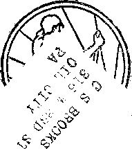
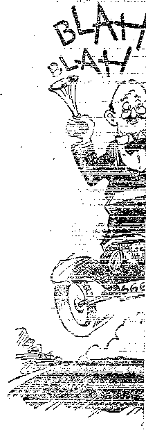
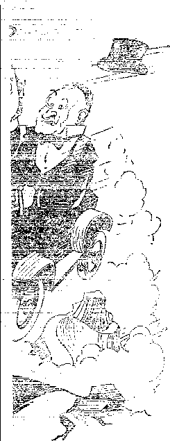

A JOURNAL OF FACT HOPE AND COURAGE
ih. Jiiiiimhiismmmmimimm
a this issue
NEW YORK’S MILK PROBLEM WASTING—SAVING—USING
SALT AND PEPPER
WHY GO HUNGRY?
MUNICIPAL OWNERSHIP
DOCTOR CONFESSES "CAN DO NO WRONG” WISDOM AND THE WORLD CRISIS
every other WEDNESDAY t____."2 =
fi.ve cents a copy one dollar a year Canadd & Foreign 1.25
Vol. XIII - No. 319
December 9, 1931
LABOR. AND ECONOMICS
Unemployment in New York , City ......... 141
With the Poor in Oregon . . . 144
St. Joseph Community Chest . . 145
■Why Go Hungry? ...... 146
SOCIAL AND EDUCATIONAL
Wasting—Saving—Using . . , 134
Salt and Pepper . . . . . .139
Tremendous, Crazy Edifice . . 139
California's $200,000,000 Aqueduct ......... 141
Pacific Ocean Has Fever . . . 143
Removing the Fake Statues . . 143
Old World and New ..... 158
MANUFACTURING AND MINING
Deep Mine of Witwatersrand . 143
Greatest Armament Maker . . 143
FINANCE—COMMERCE—TRANSPORTATION
More About Wheat-Coffee Trade 139
Glad to Lend Money at %% . 140
Big Railroads Come to Terms . 141
Big Business Frightened . . . 143
Among the Wolves in California . 145
The Demand for Leadership . . . 145
Flaming Financial Worlds . .151
POLITICAL—DOMESTIC AND FOREIGN
World Court Condemns Itself . 140
“'White Man No Good” . . . 142
Agreed on Main Issue (Cartoon) . 145
Municipal Ownership in Indiana , 146 “Can Do No Wrong” ...... 150
AGRICULTURE AND HUSBANDRY
New York’s Milk Problem .
X-Rays and Plant Life . . Not Much for His Wool .
. 131
. 139
. 148
SCIENCE AND INVENTION
Infra-Red Rays Locate Sun , . 139
Photographs Made in Dark . . 139
Radio Guidance of the Utah . . 139
Robot Operation of Airplane . . 142
May Be Something to Divining Rod 152
HOME AND HEALTH
Punctured Wrong Spine . u . 140
Diabetes in Canada . . . , 140
Some Recent Funerals .... 142
Doctor Confesses Guilt in
Luebeck Disaster .... 147
TRAVEL AND MISCELLANY
Terrible Conditions in
Saskatchewan ...... 138
Guggenheim in Cuba .... 140
His Only Treasure ..... 142
Blessings in Old Meiiico . . . 149
RELIGION AND PHILOSOPHY.
Pope Calls for Prayer .... 141 Jehovah’s witnesses Not After
Money ........151
Radio Witness Work ..... 152
Wisdom and Present World Crisis 153
What the Watchman Sees . , . 157 Would Have to Know Who
Blessed It , . . . . ,159
Published every other Wednesday at 117 Adams Street, Brooklyn, N. Y., U. S. N.f by WOODWORTH, KNORR & MARTIN
Copartners and Proprietors Address: 117 Adams Street, Brooklyn, A. Y., TJ. S. A. CLAYTON J. WOODWORTH .. Editor ROBERT J. MARTIN .. Business Manager NATHAN IL KNORR.. Secretary and Treasurer
Five Cents a Copy—$1.00 a Year Make Remittances to TEE GOLDEN AGE Notice to Subscribers: For your own safety, remit by postal or express money order. We do not, as a rule, send acknowledgment of a renewal or a new subscription. Renewal blank (carrying notice of expiration) is sent with the journal one month before the subscription expires. Change of address, -when requested, may be expected to appear on address label within one month.
Published also in Esperanto, Finnish, Gorman, Japanese, Norwegian, Polish, Swedish,
Offices in Other Countries
British ....... 0 .... 34 Craven Terrace. London, W. 2, England Canadian . . ,...... . 40 Irwin Avenue, Toronto 5, Ontario, Canada
Australasian ...... 7 Beresford Rd., Strathlleld, N. S. W., Australia South African.......... 6 Lelic Street, Cape Town, South Africa
Entered as second-class matter at Brooklyn, N. under the Act of March 3, 1S70.
Volume XIII Brooklyn, N. Y., Wednesday, December 9, 1931 Number 319
New York’s Milk Problem
FIFTY years ago, in a little village in western New York, the village dairyman had his ' own herd and delivered milk at the door for 5c a quart. He measured out two pints to the quart, and always about half a pint more for good measure. In a big family, where the kids could stand lots of milk, and the daily quota was 5
, quarts, the price was 4c a quart.
On those prices the dairyman did fairly well. His herds were improved, he built himself an __________elegant home of probably a dozen rooms, and
sent one of his boys to college. The other could -.-have gone if he had wished to do so. The milk . was not pasteurized; it did not need to be. And vqien-J. was bought t0 the door it had in it all the cream that belonged with it.
We do not know what prices the farmer receives for his milk in these days. He should receive more than the farmer back there, so long ago, but we doubt if he usually receives as much. A letter in the Philadelphia Record states that the dairyman who wrote it received for 12,000 quarts of milk only about 1.3c per quart for which the consumers paid 12c per quart. It hard. ly seems possible that such villainy could exist.
The dairyman went on to say that his milk came into market as surplus milk, and that though there were thousands like him who were suffering from low prices, yet the average for all the farmers around Philadelphia, at the time he wrote, was only about 3.2c per quart.
........ There seems to be a conspiracy among the big dealers to prevent the public from knowung the facts about this milk business. One of the arti-flees used to conceal the truth is that the milk is bought from the farmers by the pound and is sold to the public by the quart. When the price per pound is known it becomes necessary to figure that there are 46.5 quarts in each hundred pounds, and almost nobody outside of the farmers themselves are enough interested to figure the thing out and see how these good people are being treated.
But one thing is sure: they are being treated badly. Go through any dairy district contiguous to the New York market and see for yourself the' abandoned dairy farms; that tells its own mute story of what has happened. Thousands of them have had to give up the fight. The odds against them were too great.
Bottled milk sells in retail stores at the following prices in various cities: Cleveland, 8c; San Francisco, 8c; Detroit, 9c; New Orleans, 9c; Boston, 11c; Chicago, ll^c; New York, 15c. Nobody with a grain of sense could suppose that there is any reason for charging 15c in New York for something that is sold in Cleveland, under the same conditions, for 8c.
Delivery charges are l%c per quart in Chicago, 2c in Cleveland and in San Francisco, 2^c in Boston, 3c in Detroit and in New Orleans; nothing in New York; so that the price of milk per quart bottle delivered at the residence is 10c in Cleveland and in San Francisco, 12c in Detroit and in New Orleans, 13c in Chicago, 13i^c in Boston and 15c in New York. The dairymen around New York are probably getting about 4c a quart for their milk, but quite likely much less than that.
We had a good chance to look into the hearts of the big milk distributors here in New York on the first of December, 1930. They announced that on that date, because the decline-in milk consumption, owing to the hard times, had come to be more than 1,000,000 quarts per week, they would reduce the price 1c per quart.
The same article stated that the price paid to the producer would be reduced forty-seven cents per 100 pounds. In other words, the reduction to the producers would be, on every quart of milk, just a little bit more than the distributors' reduction in price for it. Thereafter the distributors would get a slightly larger profit on each quart than previously, and as they hoped the smaller price would bring larger sales they
actually hoped to increase their profits as a result of the distress.
One thing is sure: they certainly shoved the whole burden of the Wall Street panic right over upon the dairyman, with no pretense of doing so much as to lift a finger’s weight of it. Multitudes of these dairymen are now in their last gasp as a result.
' And not only is this true, but a dairyman cannot bring his own milk into New York city and sell it, no matter how fresh and good it is. It has got to be monkeyed with by a bunch of experts who are not worth as much to society as a group of toads. Milk not pasteurized cannot come into New York. Whatever else the police are good for, they are useful to see that nothing breaks into the profits of the milk ring.
And even if the dairyman could get his milk through to the New York market he is still handicapped by the fact that at any moment along will come the serum squirters and condemn his best cattle as tuberculous, when they don’t know any more about it than the man in the moon.
And, incidentally, all those supposedly tuberculous cattle are offered to you and to me in the meat markets at the usual prices, and when they turn out to be extra fine pieces of meat, as is often the case, we pay the extra fine price.
The owner of the condemned cattle had to take what was offered, and not much is offered for cattle that have been condemned. There is no evidence that any human ever received tuberculosis from drinking the milk of tubercular cattle. •
As we said, we do not know the price that the farmers around New York get for their milk, but we do know what they received for it in August in the neighborhood of Flint, Michigan. At that time the farmers thereabouts were receiving only l%c to 2c per quart and were in desperation.
On August 1 they’ met in a big mass meetingin Goodrich, Atlas township, and demanded from their tormentors one dollar or more per 100 pounds of milk. In other words, all they asked for was a small fraction over 2c a quart; and it is nothing less than a crying shame if they have to accept so small a price as 2c. If the crooks at the other end of the line did the fair thing no farmer would be asked to produce milk in these days at less than 4c a quart, and even at that he could hardly maintain his family properly and keep up his farm expenses.
The bright minds among New York’s big milk distributors recently got together to see how they could maintain or increase their profits during these times of trial. If they once thought how many lives of the babies of the poor would be sacrificed by their plans it is hard to see how they* could have gone on with them.
The lines of their reasoning are clearly exposed to view. The very poor buy their milk loose, so as to save the costs of bottling, and the cost of the bottles themselves. It is to the financial interest of the big milk distributors to have all the milk of the city sold in bottles.
A great hue and cry was made to see if some kind of ordinance might be jammed through so that no more loose milk could be sold, and all milk marketed in the city would hereafter have to carry* the higher, that is, the bottled milk price.
This would cost the poor of the city-, the very poor, those that must have milk in order to live, an additional $46,000,000, and the milk trust, if they could put the deal through, stood to pocket most of that $46,000,000. Of course there had to be an ostensible reason for such a move, and hence it was with one eye wide open and the other one tight shut that we saw the following item in the New York Times of September 4, 1931:
The forbidding of the sale of loose milk, in New York city except for manufacturing would be welcomed by the Health Department, because that bureau lacks adequate facilities to insure its absolute freedom from contamination, Health Commissioner "Wynne declared yesterday. He added that it would be virtually impossible for the city to guarantee the purity of loose milk even if an inspector stood beside every dispenser all day long. The department is considering prohibiting milk pumps.
Well, the health commissioner named a Loose Milk Commission, and, to say the least, it was an unfortunate thing to do at a time when the poor are hard pressed and there is a suspicion in the minds of many that the zeal for having such a commission named originated with . those who expected to profit financially by any rulings it might make.
In the interests of the public, Samuel Untermyer looked up the recent history of the members of this committee and this is what he found. There was Professor Elmer V. McCollum of Johns Hopkins University. He draws $10,000 a year annual salary from the National Dairy Products Company, of which the Sheffield Pro-
ducers Association is a subsidiary. How would you think Professor McCollum would reason on that kind of a commission? '
There was Dr. Philip Van Ingen. He is one of the Borden consultants. Naturally he would see things as the Borden people do. There was Edward Fisher Brown, on the payroll of the Milbank Foundation, and Mr. Milbank is chairman of the board of Borden’s.
Patrick D. Fox, also on the Commission, is vice president of the Borden Company. Mr. Halliday, also on the Commission, is in the Sheffield Producers Association. Professor Rosenau is scientific adviser to one of the big milk com-panics of Boston. Doctor Sexauer is president of the Dairymen’s League. One could not wish to see a commission more beautifully packed with experts whose conclusions were foregone ~ by everybody.
This famous commission, eleven of the sixteen members of which were directly or indirect-"ly connected with the bottled milk industry, held ; open hearings just long enough to be able to say
— -that the hearings were open. Then they closed
them and got down to business and on October 5 insulted an intelligent people by a report favoring the abolishing of the sale of loose milk if a reduction, were made in the price of bottled milk ..... ' to 12c a quart. The document held that bottled milk at 12c a quart was possible, and at that price would be within the reach of all consumers; r -which, latter statement is untrue.
• Former Health Commissioner Harris, evi’ dently an honest man, asserted that during his term of office the Bureau of Laboratories made a careful study of the practice of dipping milk and that the practice of the selling of loose milk presents no serious aspects, nor is there .....any danger to public health.
..... A survey in 1920 by the then Commissioner of Health of New York city which covered 11,000 ,. families showed that the average amount then received by each child daily was two cups and one ounce, which is not enough. Conditions now are very much worse. If the supply of loose milk is cut off, these little folks will have to take very much less, as the loose milk is sold at 5c less per quart than the bottled.
An alleged leak in one of the offices of one of the bottled milk concerns.shows that all plans were made that should loose milk be banned they would adhere to the 12c price only until the first of the year, when it would again be boosted to 15c and nobody in the city could escape paying excess profits on every bottle thereafter consumed.
New York is one of the few great cities of the world that has done and is doing nothing to see that an adequate supply of rich milk is obtainable by all the people at a reasonable price. It is well known by even beginners in health subjects that an adequate milk supply at low prices is far more important than all this twaddle about germs and contamination.
At present Tammany has New York by the throat, and its officials will do whatever they are told to do by people as big as the Milk Trust, who pay for what they get and get what they pay for. A few years ago, in Minneapolis, a much smaller city, to be sure, the milk producers ousted the big distributors from the saddle and ..made a huge success of a cooperative dairy.
Small grocers in New York city have complained that they have not been allowed to sell bottled milk at less than 15c a quart, even when they could do so at a fair profit. The propaganda by the big distributors and the packed Loose Milk Commission has been very effective. One Brooklyn principal of a public school even urged the children not to drink loose milk, ‘as it might give them infantile paralysis.’ He would be of more use in some other line of business than as a teacher in a public school.
The Kings-Queens Milk Dealers’ Association calls attention to the fact that no epidemic has been traced to loose milk and that it is pasteurized before it reaches the retail dealer. They have offered to engage reputable chemists and analysts and to test thousands of samples of loose milk from all sections of the city. If properly handled it is as healthful as bottled milk.
Samuel Untermyer, retained by the above dealers to protect their interests, wrote the Loose Milk Commission the following pointed letter; which shows what he thinks of the whole dirty business:
The information comes to me, whether correct or not, that all the scientists listed on your commission compose what is known as the Eastern Scientific Clique and that this group can always be found identified in the same activities; that they are always together on research work; very friendly relations exist among them, and that, in effect, they constitute an “inner circle”.
W asting——S aving—U sing
JT IS probably true, as is frequently claimed, that the American people are the most wasteful people on earth; and no one can defend wastefulness. For example, no one can defend the burning of forests, factories or homes, the destruction of food and clothing, the waste of natural gas, the burning of oil Wells and coal mines, the poisoning of drinking water or the contamination of the atmosphere.
Common sense tells us that it is right to save things. When the Lord told the apostles to gather up the broken pieces of fish and bread, He gave us all an important lesson that economy has the divine approval; and the reverse must be true, that wastefulness of His bounties is displeasing to the Creator.
Yet saving can be carried to the point where it is wasteful in the extreme. What is economy in one country would be wastefulness in another. For instance, in China the leaves are gathered as they fall and are carefully saved to be used as fuel in the cooking of food, or they are piled and allowed to rot to provide humus for the impoverished soil.
In most countries of the world, the inhabitants feel that they have something vastly more important to do than to pick up leaves one by one. They would rather rake the leaves together and burn them and get their fuels and fertilizers some other way.
One of the greatest apostles of economy we have in the United States is Henry Ford. He is always talking about it. He says we ought to give more thought to not wasting than to reclaiming what is wasted. That is probably true, and yet there are people who think that Henry Ford has taught millions of people to buy what they do not need and to replace it before it is worn out.
We are not so sure that under present conditions the general use of automobiles could be considered a waste. In America most of Jehovah's witnesses either have cars of their own or have friends who have cars which arc used in the Lord’s work. No one could claim that an auto which is regularly and often used in the Lord’s work is wasteful.
If, today, Jehovah’s witnesses were to try to cover their territories on foot and carry their literature there would not be one-fourth the work done that is done; and it is doubtful if there would be a tenth. The auto seems to have been developed just in time so that the witness work now under way could be properly done. ..
Nobody’would claim that Mr. Ford would be justified in making millions of autos which he could not sell and which therefore could not be used. It would be a waste of iron, glass, rubber, cloth, tinware, paint and storage, which might better be used otherwise. .
Somebody took the trouble to count the number of small rubber bands in a pound of rubber and found a pound package contains 3,440 bands. On the strength of that showing, the statement is confidently made that an employer cannot afford to have a clerk pick up a rubber band which he drops on the floor. The same claim has been made with regard to carpenters: that a carpenter cannot afford to pick up- a nail, or even to pick up several nails, because his time is worth more than the material salvaged.
However, while it might not pay an employer to have a clerk pick up a single rubber band, or a carpenter to stoop to pick up a single nail, yet it would surely be economy to sweep up a scattered package of rubber bands and replace them in their receptacle, or to do the same with a quantity of scattered nails.
The most useful people inf he world are neither the wasters nor the hoarders; they are the users.
If we turn to the operation of the laws of nature, we find what would seem to be wastefulness on a huge scale. There are many different kinds of insects, vermin and wild and domestic animals which multiply so rapidly that their progeny would soon fill the earth unless there were foes at hand which are so efficient in destruction-as to allow but a very small minority of the young to survive.
It is said that a single mullein plant was found, by actual count, to produce approximately 700,000 seeds, yet the total results in the neighborhood months later showed only 108 mullein seedlings. Thus it required about 7,000 seeds to produce one seedling.
It is said that if all the eggs of a mother codfish were to survive and breed, it would not be long before the oceans would become completely filled with fish, so that one might walk from New York to Europe on their backs;' and if that is not a fish story, you tell one! .
Dr. Julius Klein, considered one of America’s greatest business experts, has stated over the radio that in the conduct of American business $8,000,000,000 to $10,000,000,000 is wasted every
year, a waste equal in amount to the whole American foreign trade. Some of the items in this huge waste Dr. Klein listed as excessive expenditures in sales promotion without adequate information as to prospects in a given market, unwise credit methods, unfair grading practices of small trading minorities, disorderly marketing (particularly of perishable goods), careless and injudicious procedure in the retail trade, high cost of unsystematic warehousing, extravagant delivery services, ill-judged adver-. tising, unwise instalment methods and packing, handling and transportation of merchandise.
The World’s Work says that the wastes in 100 American companies amount to more than $20,000,000 a year. The reasons assigned are: Ignorance of the business methods now in use by other business men; failure to test the effectiveness of a policy or method before adopting it whole-heartedly, or, in other words, the following of hunches or ideas that have not been tried first; unquestioned acceptance of methods that have been so long in use as to have become traditional ; failure to insist that every phase, activity and element of a business shall justify itself on the ground of profitableness; insistence, that is, on the homely virtue of getting one’s money’s worth; and the assumption that if a business makes any profit it is therefore probably perfect.
John F. Dylan, said to be the best mayor New York ever had, recently stated over the radio that in the government of New York city there is an annual toll of $50,000,000 a year in graft and waste, and that the ultimate saving an independent administration could effect would be over $70,000,000 a year.
Recovery of Waste Products
You have probably heard of gasoline. Did you know that there was a time when the refiners of petroleum were very much interested in getting out of the crude petroleum all the kerosene that could be recovered? There was a market for that, but there remained an explosive fluid (gasoline) for which there was no market. Not being ~ able to sell it, they poured it into the Delaware river off Marcus hook, with the result that one time they had a fire there in which the surface of the Delaware river was aflame for three miles!
Still earlier, in various parts of western New York and Pennsylvania wells were dug for brine, and in some instances the owners of the brine wells were quite disappointed because oil, which had a limited use as “medicine” got into the salt and spoiled the well. That was before the day of kerosene oil lamps.
It is only very recently that oil field brine (waste water which collects near oil wells) has been salvaged, but by-products are now’ extracted from it, including magnesium, used in flashlight powders and fireworks; bromine, used in the manufacture of dyes, in “medicines”, and as a disinfectant; iodine, used in “medicines”, dyes and photography; calcium chloride, a drying agent, and others.
Chlorine gas was once a destructive by-product of industry. Now somebody has discovered (or thinks he has discovered) that the treating of drinking water with this gas purifies the water. This is open to argument, but there is no denying the fact that much of the gas which formerly was wasted is nowT ostensibly used for water purification purposes. It looks as though the manufacturers of this gas w7ere determined to make us take it some w7ay or other, whether we want it or not.
It -does seem as though a person who is going to be killed and who has not done anything to deserve being killed ought to have some choice as to the method by which he is to be dispatched. But this reasoning does not appeal to those who attend to the chlorination of our water supplies. They want us to drink all the chlorine they put in the water, regardless of whether we like it or not, and that is just what we are doing. Anyway, it provides a way to dispose of the surplus chlorine gas, and no doubt makes work for doctors, undertakers and others, and thus keeps money in circulation and hence is more or less “a boon to mankind”.
The Wastes of Combustion
The first steam engines were extremely wasteful affairs, consuming many times as much fuel per unit of power as is now required. It is not so long since it v7as considered quite the thing to expect a great pall of smoke to hang heavy over any city in which there was much business. Some progress has been made in smoke prevention, but nothing to what will be made. A London paper estimates that even in these hard times the national output of smoke in England alone represents an annual loss of some £50,000,000 a year.
It is not so long since in the making of coke all the smoke and waste gases were belched forth into the air and all the nearby communities were smirched with soot. Today in the making of coke these gases are saved and used. Among the byproducts are illuminating gas, ammonia, coal tar, light oils, aniline dyes of every color, sulphur, “medicines,” antiseptics, benzol, explosives, synthetic perfumes, synthetic flavors and carbon dioxide. The sulphur of ammonia distilled in the manufacture of coke is one of the most valuable of all fertilizers. Hundreds of thousands of tons of carbon dioxide are used annually in the making of soda water. .
One Brooklyn generating station uses daily 576,000,000 gallons of water, which is more than the combined daily water consumption of the boroughs of Manhattan and Bronx. In condensing the exhaust steam of this station, the temperature of this water is raised 20° F. There are eight other great generating stations in the neighborhood. Together, these nine stations consume daily 25,000 tons of coal, of which at least 12,000 tons go to create hot water, all of which is wasted.
It is calculated that if this heat could be saved it would take care of the daily fuel requirements of 200,000 families. It is known that the waste of this heat is foolish and extravagant in the extreme; but it seems at present unavoidable, and hence nothing has been done about it.
It seems absurd to worry about the steam that is wasted from locomotive whistles, does it not? Yet calculations made by Dr. Foley, of Indianapolis University, showed that millions of pounds of coal are consumed annually in the United States in blowing locomotive whistles. He proposes a change in these whistles to a single high-pitched note, and estimates that this would save a million pounds of coal a year.
Tn the city of Pueblo, Colo., hot water as a waste product from ice plants and other factories is being used in the wintertime by the City Highway Department to remove snow and ice from the highway. Street sprinklers filled with -the hot water are driven through the downtown streets. One sprinkler follows another, both directing streams of hot water upon the pavement, with the result that the snow and ice quickly melt. As the hot water is obtained free, the city saves large amounts usually spent in shoveling and hauling snow from the streets.
There was a time when in the smelting of copper great quantities of sulphur dioxide fumes ■were generated which killed all the vegetation over a wide area. Now this gas is first turned into sulphuric acid and then into acid sulphate, one of the three essential ingredients in agricultural fertilizers. The fumes which once destroyed vegetation now make it grow more luxuriously.
The waste products of the liquid air industry, argon and neon, two of the so-called noble gases, are now saved and utilized. Argon in electric light bulbs provides a brilliant white light; while neon furnishes-fiery orange-red lights which now give our downtown streets at night such a pleasing appearance.
Belgium’s mysterious poison fog is no longer a mystery. It was merely the sulphurous fumes of a Hearty factory which atmospheric conditions permitted to rest as a blanket covering the adjacent lowlands.
In the city of Berlin it could almost be said that nothing is w’asted. In that city all the refuse that cannot be otherwise reclaimed is burned and the resultant slag is formed into bricks which have been found excellent for building, paving and other purposes; and they are durable and readily worked.
Making Use of Wood Wastes ...........
A generation ago sawmills were put to much trouble and expense to dispose of their scrap. Now the scrap goes into the making of rayon, charcoal, wood alcohol, various acids and lacquer solvents. Sawdust is used for curing meat, -filling plaster board, making composition flooring, and for the packing of grapes. Shavings and other planing mill waste, are used in the manufacture of linoleum. .
Sawdust of various kinds is also used in the production of tar, anti-knock motor fuel, tar. acids and phenols, turpentine, wood alcohol, and acetate of. lime. A large yield of gas for fuel is also obtained. In the lumber industry now practically every bit of wood from the tree is used for some purpose.
The chemists tell us that 60 percent of wood consists of carbohydrates which will sometime be used as fodder for cattle.
In the manufacture of paper and the conversion of it by chemical action into what is known as sulphite pulp there are generated great quantities of waste liquids which have changed hundreds of our streams and rivers into black and evil-smelling open sewers. Seven thousand gallons of water must be evaporated for each ton of paper pulp manufactured from wood. Some progress has been made in converting these waste waters into alcohol, road binders, linoleum, dyes, fertilizers and other products.
Utilization of Food Wastes
Corn (maize) is America’s greatest crop and represents its greatest waste. From corncobs, of which 20,000,000 tons are now produced in the United States each year, there may now be made maizolith, a substance hard as stone and stronger’ than most kinds of wood. Other byproducts are furfurol, dyes, paints and lacquers.
Cornstalks are about 30 percent cellulose, and from this may be made artificial silk, motion picture films, paper, explosives and a wall board which is so good that a million-dollar corpora-rldn'has been organized to undertake its manu: facture.
Cornstalks, straw and potatoes can be profitably converted into alcohol. The wastes from the manufacture of glucose can be used for stock ..........feed. This last discovery in a single industry ........- resulted in a reduction of volume and concentration of the plant waste from over $800,000 to bUtlTfnbdut $50,000. ■
-- Cotton is still king, but a mighty sick king at the present writing. In 1860 cottonseed was garbage; in 1870 it was a fertilizer; in 1880 it was a cattle feed; in 1890 it was a table food; and now it provides for us, or for those who like it, oleomargarine, butterine, salad oil, "medicines,” cosmetics, illuminating oil, lubricating oil, oil ........... for mixing with paints, washing powder, roof----- ing tar, dyestuffs, explosives, celluloid, writing paper, artificial silk, carpets, rope, twine and fertilizers. A ton of cottonseed hulls will yield 500 pounds of xylose, a rare sweet so scarce that ............. . it has been selling for $100 a pound.
.......... There is hardly any limit to the products that can be derived from straw by distillation. Among "....... the products already obtained are a new germi-
• cide, a roofing and damp-proofing paint, and a fly spray. A gas may be obtained from the straw which can be used to operate an auto.
....." Oat hulls help to make a synthetic lacquer used to give a beautiful, smooth, hard finish to "autos and furniture.
Apricot pits are now made into various in! dustrial ingredients, including oils, perfumes and flavorings.
It is quite likely that in the near future many of our readers will be drinking at soda fountains an extract from peanut shells, but it will probably be sold to them under another name.
' The casein from skimmed milk is made into a glue so resistant to moisture that a glued joint can be boiled in water and will still hold. When the glue is used in fastening woodwork, the joints are stronger than the wood itself. It is being used in airplane construction. Casein may also be worked up into materials for unbreakable cups and saucers, eyeglass rims and beads, massage cream, and waterproofing for paints.
There is now practically no waste around a modern factory where herring and sardines are packed. The scales bring in hundreds of thousands of dollars to the pearl essence manufacturers ; the heads and tails are worked up into nutritious and cheap poultry food; the rvaste oils are used in the production of varnish and paint.
One of the greatest of the food wastes is the erosion or washing away of soils of the estimated value of about $2,000,000,000 a year. These soils carry away with them the nitrogen, sulphuric acid and potash which are essential to plant life. The food thus lost by erosion is estimated at twenty times the value of all the plant food removed by growing crops, .
Consider the Junk Man
In a land where as much material is wasted, as in America, the junk man fills a very important and useful place. The business of dealing in old scrap iron and steel in the United States alone runs to half a billion dollars a year. In the year 1928 there were 516,139 tons of scrap iron and steel exported to foreign lands. The tin cans that once decorated our landscape, and still decorate seme considerable part of it, are now* gathered, compressed into big bales and shipped to England. There they are detinned, smelted and made over into new sheets of metal.
The production of secondary copper (scrap copper) amounts to approximately half of the new copper output per year. About 40 percent of the annual supply of tin and lead has been used before.
The Ford Motor Company employs a force of 120 men engaged entirely in the work of dismantling 375 cars every ten hours. Many parts are salvaged in their entirety, and other materials are converted into useful articles. The steel is remelted to go into the manufacture of new Ford ears and trucks.
Mr. Ford is always on the lookout to save anything that can be saved. More than half a million dollars was saved by the discovery that a single bolt in the original design of the car was not needed.
The Western Electric Company handles annually waste material which, when reclaimed, has
a value of $7,000,000. The work of reclamation is done with a force of eighty or ninety men. Rubber shavings go to makers of bowling balls; discarded tires go to Portugal, where they are used for the manufacture of footwear. All together, there are more than 200 classifications of junk sorted out and marketed at this plant.
At the Big Four shops near Indianapolis is a reclamation department which is estimated to effect a net saving of $20,000 a month. Here cast off materials of all kinds are reconditioned for further service. Bright new tin buckets, cups and other articles are being manufactured from old metal roofs. Old broom handles are made into staffs for signal flags; old canvas is transformed into curtains for the locomotives, capes and aprons.
The Oakland Motor Company is said to have saved $542,000 in a year as a result of suggestions. A boy in a stationery stock room is said to have saved his company $25,000 a year by working out a plan for reducing all printed forms to a few standard sizes and grades of paper. The New York Edison Company has a machine specially designed for rescuing the brass shells at the base of burned out incandescent lamps.
Two-thirds of all roofing requirements in the United States are now supplied from material known as prepared roofing, in which old rags are chiefly used.
The United States Government is so economical that the waste paper that accumulates from the tiny perforations in the manufacture of postage stamps is saved and sold annually to a Baltimore firm. The amount totals seventy-two tons.
It is claimed that used carbon paper can be rejuvenated three or four times by passing it over an electrically heated cylinder.
About $3,000,000 worth of waste paper was shipped from the United States during 1928, about half of it going to the Orient, wher®*sr.m--of it is worked up into pith sun helmets. Some goes into the production of artificial flowers, fire crackers and fireworks; while in the northern...... ’
parts of the country papers are employed in the place of glass as a covering for window openings to exclude the cold winds. In almost any part of Asia one is quite likely to have his pureh-asee---
wrapped in papers which are printed in cities located on the Pacific coast. - '_________
Terrible Conditions in Saskatchewan
OUR Canadian correspondent sent us a quotation from letters which he recently received from persons in Saskatchewan:
Conditions generally are desperate in the west. Many farmers are shooting their horses and cattle because of no water or pasture. Many families with insufficient food, some with potatoes and eggs only. Some children have collapsed in school, and upon investigation it was found the cause was lack of nourishing food.
We find many in tears, completely discouraged, with perhaps an inch of drifted soil on floor of house. There have been a few scattered showers, but not enough to relieve crops from drought.
Many roads are impassable because of drifted soil. I had to leave highway three times yesterday within four miles. What few autos are on the road carry a shovel the same as if it were winter with snow.
Another says:
This land is one big desert. You can travel hundreds of miles and not find a blade of grass on the roadside; and it is growing worse day by day, if you could imagine such a thing possible. In two or three .weeks roughage will be depleted for stock; then what?
People now are treking north in quest of feed and __
fuel, and in a few days that too will be possible only - ~ by rail, as there is no feed on roadsides for stock froin/pTw. the boundary line 200 miles north.
At Wilcox they haven’t had a good rain for three years this month. It was once considered one of the* ~ garden spots of Saskatchewan. The water they have stored in cisterns was salvaged from dugouts in spring- _ time, and today is much like soup. Even at that, it ---
is quite palatable when one is thirsty.
They have also been afflicted with, terrible dust_ storms this spring, so bad at times you had to turn car lights on at 12 o’clock noon, more farms in ihe air than on the ground. Even at that, it came-with-----— such force as to relieve the farm buildings from their paint, and we had one this week lasting pretty nearly two days. Have yet to see one garden in Saskatchewan this year. You may think I am trying to paint a word picture of desolation, but my command of the English vocabulary is too limited to even attempt such. And through it all the Lord’s message is going grandly on; more booklets, however. If you saw the prospects you would even marvel at that'. In Moose Jaw stores open only at noon; other towns where paid help works will soon follow suit. ,
Salt and Pepper
Battle with Giant Swordfish . ’
TT TOOK three men twenty-three hours to land a 618-pound broadbill swordfish off Los An. geles recently. In the struggle the huge fish leaped nine times into the air, and towed his \ captors forty miles out to sea.
The Vampire Bats of Trinidad
THE island of Trinidad reports existence of vampire bats which, when mad, fly in the daytime. When flying at night the bat is able to suck the blood of its victims without causing pain. It settles on its victim’s toes and fans its wings to produce local anesthesia.
An Aged Pastor’s Curious Wish ■
• JN SEPTEMBER J. B. Moody, 93 years of age, - - * fox1 many years a Baptist minister, died in
Jacksonville, Fla. At his request he was buried without public notice, pall bearers or a minister ’ to utter over his corpse words which neither he
Mr. Moody believed. No announcement of - < - his death was made until after he was buried.
—-----.....X-Rays and Changes in Plant Life
"^EXPERIMENTAL treatment of seeds with .................X-rays has yielded the surprising result that
the annual plant Euchlaena was turned into a - perennial. The possible result of this discovery ■
may be vast changes in methods of growing corn, wheat and other crops that hitherto have -............been planted afresh every year.
..-Red Rays Locate Sun -
HDIIE infra-red rays of the sun are now used ..........to betray its location in any kind of weather
’ soever, They locate it immediately and ..... . .exactly in the heaviest fog or the darkest thun
der .shower. The instrument which accomplishes ' .....this remarkable result will be of much use in
aviation and navigation.
......This Tremendous, Crazy Edifice of Ours
HpHE British novelist H. G. Wells has recently J- been on a visit to the United States. Asked if he thought there was a possibility of the collapse of our present civilization, similar to that of Roman and Greek cultures of the past, he said:
Not a possibility, but a probability. And it will come much faster than the fall of any other civilization. The Roman and Grecian empires were close to the ground. The collapse of this tremendous, crazy edifice of ours will be terrible and swift.
Photographs Made in the Dark .
THE old-style photographer had to have -*■ plenty of light, and natural daylight, too, to make a good photograph. Then came the flashlight. And now we have photographs taken by the infra-red rays, which are not light at all. Excellent photographs can now be taken in a room in which everything is pitch dark.
Bernarr MacFadden’s Generous Gift
HAVING accumulated a large estate as publisher of a physical culture magazine Bernarr MacFadden has donated $5,000,000 to a charitable corporation for the perpetuation of physical culture and health building. The income will be spent to promote hygiene and health and the physical well-being of young men and-women.
More Details of Wheat-Coffee Trade
TN THE wheat-coffee barter between the United -®- States and Brazil, the United States sold its ■wheat for 49.12 cents a bushel and paid 7.38 cents a pound for Brazil’s coffee. Brazilian •steamships received $12,000,000 in freight for carrying the exchanged products from one country to the other.
Three Waterspouts at Once -
FOLLOWING the catastrophe which wrecked the city of Belize, in British Honduras, three huge waterspouts at once were seen in the Caribbean off the coast of Honduras. They disappeared to sea without causing any damage. But in the meantime hundreds of people fled terror-stricken into the surrounding country.
Radio Guidance of the Utah
THE Utah, a battleship which cost the Ameri-
, can people a good many million dollars to build, but is now supposed to be obsolete, is to be destroyed as a result of the agreement made at the London naval armament conference. This ship will be made to teach new lessons in warfare. It will be a self-animated target. Without a man on board it will be guided this way and that and its rates of speed will be changed. The throttle valves will be opened and closed. The supply of oil to the boilers will be regulated. Smoke screens will be erected. And all this will be done by radio by selective signals sent out by a controlling ship. In the end it will be sent to the bottom, . to provide a test for the navy’s latest development in bombs, guns and fire control.
World Court Condemns Itself
THE World Court has brought double condemnation upon itself: first, by lining up in a purely political front against the customs union of Germany and Austria; and, second, by letting its opinion be known, by underground channels, a week before it was made public. The clergy are strong for having America join this ., unholy thing.
Glad to Lend Money at ’/z of 1 percent
ON SEPTEMBER 28 the Government accepted subscriptions for $100,000,000 in ninety-day treasury bills. The highest bid received was equivalent to an annual interest rate of slightly less than one-half of one percent per annum. The entire amount offered was disposed of at a price equivalent to an annual interest rate of 1.22 percent.
Civil Marriages in Britain
STATISTICS in the registrar general’s office show that of the 313,316 marriages which took place in Britain in 1929, about one-fourth, or 80,475, were conducted in the register offices. In Shoreditch, London, more marriages were conducted in one register office than in all the twenty churches of the borough put together. The people are getting sick of churchianity.
“No Doctrine Is Worth Stating”
Bishop Sam R. Hay, of Fort Worth, is alleged to have said, at the Albuquerque-El Paso Methodist Episcopal church, South, conference, that “'no doctrine is worth stating”. Jesus, the Son of God, however, spent His ministry engaged in doing that very thing. Bishop Hay would be a greater success as referee in a dog fight, although, after all, that is about the job he now has. “Beware of dogs.”
’ Punctured the Wrong Spine ■
THE New York State Journal of Medicine, September 1, 1931, contains the story of a woman who was given a spinal puncture by mistake, which was intended for another woman, and was done without her consent. As a result of the puncture she suffered great physical and mental pain, severe headaches and nausea, and pains in her legs. She sued the attending physicians for $15,000 and was awarded a verdict for $6,250.
Diabetes in Canada
TN THE years 1917,1918,1919 the deaths from
diabetes in Ontario were 984; in the years 1927,1928,1929, years in which insulin was used as a remedy, the deaths jumped to 1,309. In the years 1917, 1918, 1919, the deaths from diabetes in Toronto were 171; in the years 1927, 1928, 1929, they were 259. It goes to show that people die more quickly after treatment with insulin than they would if it had never been discovered.
Presbyterian Brethren Fall Out .... _ ___________
IT SEEMS that one of the Presbyterian saints
in South Pasadena, in a moment of large-hearted, generosity, subscribed $12,500 toward . paying for a new church. He paid $3,000 and . then lost faith in his spiritual adviser—and-----—
parked himself in another Presbyterian church-- -in Pasadena. He thought that ended ii. but it did not. His former spiritual. associates-gueW-him for the unpaid $9,500, but the jury derived ~ that he had paid enough. ..... ’........ .
Coastal Erysipelas in Mexico
PORTIONS of Mexico are suffering at present . ., from attacks of coastal erysipelas which .
causes blindness. The trouble originates with a worm from one to twenty inches long which..............
lives coiled up in tumor-like swellings under the skin of human creatures. Doctors are being sent into a district where the disease is prevalent, ? with orders to operate on every person having tumors, and thus eliminate the danger of their - infecting others. . .
Guggenheim Rule in Cuba
rpHE Cuban Information Bureau at Washing
ton seems to think that the Guggenheim rule7 ' in Cuba is not a success. It reminds us that under Machado Cuba has been under martial law for a year, the university is closed, there is ~ ~ no free speech, free assembly is denied, newspapers have been suppressed, editors have been killed, assassinations are common, torture is inflicted, 2,000 political prisoners are in bonds,........
and, as a kind of closing argument, attention is drawn to the fact that with the Cuban budget setting aside ten millions for the army less than one million is devoted to agriculture. The budget makes a daily appropriation of 38 cents for an army horse and 9 cents for a hospital patient. The American ambassador at Havana, Harry F. Guggenheim, is said to be largely responsible for continuance of the Machado dictatorship.
Southern California's $200,000,000 Aqueduct
BY A VOTE of 5 to 1, thirteen of southern
California’s cities have decided to build a $200,000,000 aqueduct to bring the waters of the Colorado River 266 miles, to turn what is already a paradise into a land still more beautiful. How a thing like this makes one’s heart rejoice! Plow infinitely better than to squander a like sum on armaments and battleships 1 The aqueduct will give work to 10,000 men for a period of six years.
Unemployment in New York City
THE Henry Street Visiting Nurse Service of New York City made 511,742 visits to the sick poor of NewT York during the last year. A census "taken by the staff showed that in one day’s work, recently, there was no work at all in 25 percent of the homes visited, and only two or three days ---■ of work per -week in another 35 percent. Rev. Dr. -................Henry Emerson Fosdick, who has good means
of learning the truth, estimates that the unemployed in America this winter will number ten iniEior persons.
The Parking Racket
_ HpHE latest racket in New York is the parking
_ - -4s racket. One thinks to park his car for a few
minutes, in the street. A rough-looking man offers to guard it from injury for 25c. Better pay ■ him, or when you return you will find your tires ’..... punctured, engine disabled, glass broken, or car
fcCiatched. The racketeers have been known to puncture tires of 150 cars in one location at one — - time. There is some evidence suggesting that
these racketeers are employed by garages who aim thus to drum up patronage.
-- --- Some Diet Items
ELABORATE studies of the diet of Central
African tribes show that the Akikuyu diet is too rich in carbohydrates and deficient in calcium, while the Masai have insufficient carbohydrates and not enough roughage; but wThat earthly good that knowledge will be'to anybody we don’t pretend to say. Then the judges at the Canadian National Exhibition have condemned the use of alum in pickling, because it is harmful to the stomach; and that was a good thing. And, finally, Frederick Hoelzel of Chicago is on a diet wrhich includes pellets of metal, glass and solid rubber. He gets paid for helping doctors make a scientific study of indigestion.
What Was It Joe Did? . .
A DISPATCH from Loivell, Mass., says that at the funeral of Rev. Joseph Bronski, of the Polish National Catholic church, three altars were going continuously from six o’clock in the morning until ten, -when the high mass was sung, making twenty-two masses in all. One . ■wonders what it was that Joe did that made it necessary to say so many masses for him. Did he do anything more than take money from the poor under the pretense that he could do some. thing for their dead fathers and mothers? Well, they all do that. Why pick on Joe?
Four Sig Railroads Come to Terms
A FTER ten years of haggling, the big railroads of the East have come to an agreement as to what they wish. The New York Central will get the Lackawanna and the Virginian. The Lehigh Valley will be the northeastern end of the Nickel Plate and Chesapeake and Ohio system. The Jersey Central will serve as New York terminus of the Reading, B. & 0., B. R. & P., and Alton roads. The Pennsylvania will have the Wabash and the Detroit, Toledo and Ironton. All this is subject to approval of the Interstate Commerce Commission.
Pope Calls for Prayer
Mb. Ratti has asked Thomas C. O’Reilly, bishop of Scranton, Pa., to request American bishops, at their coming reunion, to pray for the improvement of the world. It is high time. Maybe his conscience hurts.
It was on P'ebruary 10, 1929, at 10:30 a.ni., with the rain falling in torrents from leaden skies, that “the pope, robed in -white and wearing a gold tiara, was seated within the gestatorial chair, borne by eight bearers”, and made his fatal mistake of blessing the whole world.
If we had been there we would have pleaded with him, “Don’t do that, Mr. Ratti. Think of all the trouble you will be causing to millions of innocent people.” But no, he went ahead and did it anyway, and now look at us. Twenty million people out of work, wages cut, China almost a complete wreck, and an Armament Conference coming which may do as much harm as was done at the Naval Conference at London.
Let the bishops go ahead and pray. It certainly won’t do any good, but it probably won’t do any harm. But don’t let them do any blessing. The world is in trouble enough.
‘‘Peradventure He Sleepeth”
WE NOTICE -where the Rev. G. C. Kinney and flock of the Washington Avenue Baptist church of Johnson City, Ill., prayed all night for the relief of the unemployed in America and the distressed throughout the world. We don’t want to discourage Mr. Kinney, but we think events will show that his god was asleep at the time and he might better have followed his god’s example and got a good night’s rest. It is too late now to cry, "0 Baal, hear us,” and get any action. And, besides, if Baal were awake, what interest did he ever take in the common people, and how does Rev. Kinney know he would wish to be disturbed?
Robot Operation of Airplane
IN A TEST over Newark airport a gyroscopic device, similar to that used for many years on the large ocean liners, carried a plane along its course for eleven minutes without the intervention of a human hand. There were nineteen passengers aboard. The Iron Mike, as it is called, is a device which weighs only about 100 pounds. It instantly corrects each erratic motion of the plane, whether caused by sudden gusts of wind from any direction whatever, or shifting of weight, as one or several passengers change their seats. This device will enable planes to fly along a set course on regular schedule, regardless of weather conditions, so long as there is sufficient visibility for landing and taking off at terminals.
His Only Treasure
A FRIEND in South Africa sends us a page of pictures from the Cape Argus. All the photographs were taken by flashlight between the hours of 11:30 and 2 o’clock. They disclose twelve Negroes sleeping out in the open. Under a pier, fast asleep on a concrete block, was one . poor colored man; clasped in his hand was a copy of Judge Rutherford’s book Creation, his only treasure. No doubt he had deprived himself of a refuge under a roof for the one night so that he might have for himself what we too have found a great treasure.
A business man in Paterson, N. J., whose brother is a minister, after reading Creation said: “I have just read the most wonderful book I ever read in my life; when I got it I hated God; now I love Him.” If the poor colored man gets an equal blessing Creation will make him rich indeed.
Some Recent Funerals
0OME recent funerals were those of William
Edward Nemetz, six years of age, Fort Worth, Texas, who died of inflammation of the brain (encephalitis) following vaccination; J. Bernard Albert, Jr., forty-five years of age, Cynthiana, Ky., who never recovered from inoculation of a serum during the World War; John Daniel Rankin, two years old, Gastonia, N.C., who died within thirty minutes after being given a serum to prevent scarlet fever; and Catherine Driscoll, twenty years of age, Rockford, HL, who died after being given an antitoxin for asthma.
Chicago Bank Pays All and Quits
"DECAUSE unable to make any profit the .
State Savings Bank of Mayfair, a suburb of Chicago, asked all of its depositors to come and get their money, paid them all in full, d closed up shop; a wise and honorable thing to do, and a thing many more banks would be glad to- — do if they could, but they can’t. Illinois has had 117 bank failures since the first of 1931. Total------------
for the United States, 932. In August alone; there -■were 154. Of the closed banks, 200 were members of the Federal Reserve system, and 162 of them were National Banks. The deposits of the banks that failed amounted to $698,816,000. .. .......
White Man No Good: Lie Too Much.
HPHE Seminoles retreated'into the swamps, of -®- Florida and lived there for generations on the ground that “white man no good: lie too -... much”. Something of their feeling shines -out ; of an article by George IT. Manning in the Editor and Publisher. Mr. Manning resents the acts of censorship practiced by the White House, the ... Federal Farm Board, the Department of Justice and the Department of Agriculture. He says that “steadily, almost stealthily, there is growing up in Washington a wall of official silence on public questions, of evasion, misrepresentation, and, in some cases, of downright lying by those public officials who are paid from public funds and who are answerable to the people of the United States”. In support of his contention that America’s dirty linen should be washed and aired in public, as is our custom, he says further: “The shame of the Veterans’ Bureau and oil lease scandals that bowed the country’s head a few years ago was conceived and born behind a veil of departmental secrecy, followed by misrepresentation of facts.”
Pacific Ocean Has a Fever
THE weather experts say that the Pacific Ocean in the season just ended has had a fever of about five degrees. There were times during the summer ivhen it exceeded 78 degrees, and tropical fish migrated into it. The weather bureau calculated that by September 1 about 1205 degree days had been piled up since the first of the year. Reports indicate unusual weather all over the world. Iceland, which usually has a summer of only a few days, had an almost unbroken warm spell lasting for four months. The South of Spain was not so blistery and sultry as is usual in the summer time. England had the coldest, wettest summer within living memory, and the summers of France and ... Germany "were also cold and wet.
The Village Deep Mine of Witwater sr and
A PIONEER, P. J. de Jager, of South Africa, sends us literature, the Rand Daily Mail, of Johannesburg, which shows that the West Sub Incline of the Village Deep gold mine on the. Witwatersrand is now down 7,638 feet (and 7 expected to go to 8,500 feet) and says (not without some-show of reasonable pride), “I think this will settle this question” (as to which of earth’s mines is the deepest one); and we have to admit that it does. Incidentally, the heat of the Rand’s rock increases at the rate of one degree. Fahrenheit for every 225 feet of vertical depth. At present the gold mines of the Wit-waiersrand employ 22,000 whites and 207,000 ei: natives. The terrible conditions under which the ” blacks live is shown by the fact that the total .........wages paid to the whites .exceed the total wages paid to the natives by more than 35 percent.
“.....'Benioving. the Fake Statues
HE Vaccination Research Association has petitioned Mayor Walker to remove the
statue of the dog Balto from Central Park, which is supposed to commemorate an alleged heroic dash to Nome, Alaska, with toxin-antitoxin several years ago.
Frank Sepalla, who led the dog team, stated at the Musher’s banquet in Quebec, February 28, 1929, that the serum dash was a fake, pure and simple. Sepalla himself brought the serum to Nome, and there was nothing spectacular about the trip. The whole newspaper story was faked so as to give publicity for a serum manufacturer.
Since this swindle was pulled off there have been so many deaths laid at the door of toxinantitoxin that the manufacturers have discarded it and gotten out something different -which they call toxoid, and which is just as valuable as a preventive, and no more so.
But if .the time ever comes when we begin hauling dowm the statues of fake heroes, our parks will be virtually denuded. If you were to erect a statue to the outstanding American hero of the World War, it would be to Pershing, wouldn’t it? Well, Pershing stayed in the rear and was what you might call an 'absent’ hero or a 'vicarious’ hero. The real heroes got killed, and they won’t get any monuments, either. Pershing wanted to live, so he stayed where it was safe.
The Greatest Armament Maker
HE greatest armament maker in the world today is Vickers Limited, a supposedly English concern, with branches and connections all over the world. No matter what countries are at war, Vickers stands to win. At one time it was controlled by Hiram Maxim, an American, Torsten Nordenfelt, a Swede, and Basil Zaharoff, a Greek born in Turkey. Sooner or later every peace conference runs into Vickers Limited or the apostles of the Bethlehem Shipbuilding Corporation or other American munition makers. Their representatives are everywhere looking, for business, and getting it too. They own newspapers, and use them, and own politicians, and use them too. And the profits are huge.
Big Business Genuinely Frightened
IG BUSINESS is genuinely frightened. Declaring that there is now no alternative to
chaos save to invoke the ultimate authority of the state in defense of the public security, The Business Week, a journal of business news and interpretation, in an editorial entitled “Action”, makes the following pessimistic statement:
Nothing the individual business concern, community, or citizen can now do for themselves can bring recovery save through a prolonged process of liquidation, loss, and hardship in which only the strongest survive. Wago cuts, drastic individual or business economies, curtailment of public expenditures, contraction of credit, may afford temporary relief and assure individual survival, but they progressively destroy the network of interdependence upon which the security of organized society rests, intensify and spread its distress, speed its disintegration, and make its reconstruction more difficult.
With the Poor in Oregon By C. E. Abrahamson (Oregon)
WE IN Oregon are suffering terribly from a combination of unemployment on the one hand and greed on the other.
We, that is, the farmers and organized workers, won a signal political victory at the last election. But we have learned, to our sorrow, that we cannot eat political victories.
That is the principal pearl of wisdom which we acquired from the last political campaign. With this little bit of wisdom'came also knowledge of certain facts hitherto kept carefully under cover by the ruling powers; i. e., the Devil’s deputies. I offer a few for your enlightenment and consideration.
This state has an eight,-hour law. This “law” specifies eight hours a day and forty-eight hours a week as the maximum regular working hours for employees on public works, and specifies that double wages must be paid for all time worked in excess of this maximum. It also includes in its jurisdiction employees of contract on public works, all state and county employees, with certain exceptions, and all employees of municipalities having populations of over 1,000.
Just subsequent to the election I was appointed as chairman of a committee instructed to investigate the working of this law and its observance. I found this particular law idle, and its observance nonexistent.
During my investigation I interviewed personally employees of five different contractors, the State Highway Department and those of one county, and found that violation of every letter of the law was the rule. Its observance in any part was the rare exception, and then only when some hardy soul had insisted on his rights. This, of course, was followed with dismissal and denial of future employment.
One contractor, who was interviewed by an alternate appointed by me, had the unadulterated gall to declare that he was working his men ten hours a day out of “the goodness of his heart”, because he 'wanted them to make a winter’s stake and they couldn’t make it on eight hours a day’.
Another contractor declared that he could not afford to pay double wages for overtime, although his contract specifies that such rate shall be paid, and he must surely have based his estimates on these specifications.
The State Highway Department was interviewed by representatives of labor organizations concerning this matter, and their attention called to the fact that the State could be held responsible for any loss to the employees of a contractor whose bondmen had been released, but could only say that they were getting rid of these “undesirable contractors”, and had no word at all to say as to what disposition should be made of employing officials in their department who were also guilty of violation of this law. ■
One contractor, the worst offender of the lot, told his men that twenty-five to thirty men a day called at his office for work and were rejected. He used this as an argument in cutting wages of a portion of his employees, and at the same time was working his crew from nine to fourteen hours a day, the latter figure being the rule.
It is significant to note that this investigation, was carried on and these facts gathered almost entirely after election, when wo had Avon our “significant” victory.
While I had been active on my own hook most of the summer, -the committee was not appointed until several weeks after the election.
Please remember that this condition obtained in our most noble state when there were 10,000 unemployed men in the city of Portland alone, and despite the fact that the law in question was particularly designed for the protection and benefit of the unemployed.
Having been quite active in our “late” cam-
Agreed <
Driver. The steerin lost control of
All together. Well anyway.
paign, I interviewed many worthy citizens, some in moderate circumstances, but most of them in poor and even destitute circumstances. They all agreed with me that we must have a change of government, because laws designed to benefit the poor were not enforced when enforcement would be at the expense of the rich.
One old gentleman called my attention to the fact, which I later corroborated, that not one law of this state which was designed to particularly benefit the unorganized poor folks of the state carried a penalty.
• Main Issue
■s'broken, and I have
*ep blowing our horn,
During previous elections held in this state we have not made a very respectable showing. At times it has been most discouraging. Quite naturally, I wondered why. Why did they come out and vote this time?
The fact of previous failures and present success was the answer in itself. The average man doos not care to govern, but does want to be properly governed. When he is well fed, housed and clothed, he considers himself properly governed. But take away the greater portion of these, and he turns, first to and then on the government and undertakes to alter it. .
God grant His kingdom !
Among the Wolves in California
rpo HELP out the “public spirited” citizens of California wdio wanted to make 12 percent on small loans under $300, the people of that state, in 1919, allowed this unjust and extremely usurious rate to go into effect, and it has now been in use for twelve years.
But 12 percent, outrageous as it is, is not enough; so, on August 14, 1931, the Clowdsley bill wras passed by the legislature, under .which the legal rate is increased from 12 percent to 42 percent.
The new law was marked by the immediate filing of an action by the “Beneficial Loan Society” (note the hypocritical name), asking for an order compelling the state corporation commissioner to issue a license to do business under the provisions of the new law. How the 'Beneficent’ do love the swill.
St. Joseph Community Chest
By Dr. R. B. Downing (Missouri)
fpHE Community Chest has engaged a representative for the purpose of distributing their funds, at a salary of $5,000 a year. Up to this time I believe these funds have been distributed wuthout any such expense. And to think that there was not a man in the city who was competent to continue doing so! They had to go outside and get a man who was employed in a city where their banks had gone broke and he was out of a job.
With all respect to those who have undertaken to spend our money for us, I wonder why such action was taken just at this time, when the city has so many unemployed and could use their funds to such advantage to relieve the suffering instead of using the sum of $5,000 for one individual who had been employed at the rate of said amount up to this time in another place.
The Demand for Leadership
UNDER the startling headline “Present Leaders Are Incompetent” the financial writer B. C. Forbes says of the great financiers:
If such men had not reached out and arrogated to themselves tremendous powers, tremendous authority, tremendous amounts of capital, ordinary mortals would not be entitled to expect tremendous things of them. But since such men chose to assume leadership on a colossal scale during fair weather, can the public be blamed for looking to these same gentlemen for equally bold and aggressive leadership, now that leadership is urgently needed? The conclusion reached by many is that ambitious financiers and managers grabbed the rewards of leadership but are now ducking the responsibility rightly attaching to leadership. They seized the privileges but they now create the impression that they are not prepared to pay a price satisfactory to their fellow citizens.
Why Go Hungry? Provide Your Family with Food! By Dr. C. T. Betts (Ohio)
$1.00 buys 120 pounds of wheat: food.
$1.00 "buys only 10 pounds of whole-wheat bread.
120 pounds less 10 pounds equal 110 pounds of loss to you.
120 pounds of wheat will make 120 one-pound loaves of bread. This at ten cents a loaf will cost you $12.00.
$12.00 less price for food, $1.00, is $11.00 profit for somebody.
Buy a bushel of wheat and keep your family well fed. It costs only one cent for five meals. It takes an average of a quarter of a pound for one adult meal; cost, one-fifth of a cent.
How Can This Be Done?
One bushel of wheat contains 60 pounds. At 4 meals per pound it makes 240 meals, for fifty cents, or five meals for one cent. If milk and brown sugar are used, ten cents must be added, making the total cost eleven cents for five meals.
How to Prepare the Wheat
Take 1 pint of water, 1 pound of wheat, and place in an enamel or glass (not aluminum) dish over night. In the morning heat to a boiling point and cook until the kernels break open; then set in a cool place until the next morning. Reheat and serve with brown sugar. Use milk or cream as desired. If you are bothered with constipation or other bowel troubles, two meals of this can be served daily. Cooked wheat, if kept cold, will not sour within 60 hours.
Let Us Get Back to Nature’s Foods
Drink water from deep city wells, whenever possible. There are a few left in the city. Don’t drink faucet water filled with chemical poison. Make your own whole-wheat bread; it costs only one cent a loaf, including gas to bake. To make tasty bread, put in the dough a good handful of rolled oats. If you wish to grind your owm wheat, a small mill costs about $4.50.
Eat uncooked vegetables, mostly raw cabbage, as in a slaw or salad, for your evening meal. Remember, eat some green food daily at noon, with some fruit.
It has been suggested at the Social Service that $15,000 worth of wheat be purchased for serving the poor. This will buy 30,000 bushels, or 1,800,000 pounds. At four servings per pound, this will give 7,200,000 meals of real food to those who are hungry. It will be worth much more than the cost, because those who eat it "will not...........
get sick. . ...........................
$15,000 worth of wheat made into one-pound'-loaves of whole-wheat bread, at ten cents per loaf, will bring $180,000 in groceries; profit to somebody of $165,000. The Social Service de-serves great credit for eliminating the profit, which comes out of the taxpayers’ pocket.-
The time has arrived that the people slmul i be served with food, not groceries. Other nations live on whole rice, whole wheat or other whole grains, with fruits and vegetables. They are not sick, like Americans, who are paying $3,000,000 per day in $5,000,000,000 worth of hospitals.’™ How can doctors keep us well when we recognize few if any of the fundamentals of eating normal - " ■ or natural foods?
ONE of the most striking examples of what municipal ownership can do for a city may be found in Washington, Indiana. That city has one of the lowest tax rates in the state, and one of the lowest electric light and power rates; is absolutely free of debt, has put scores of thousands of dollars into the general city fund, used surplus earnings to keep the factories in the town running and its people employed, and otherwise contributed in most astonishing ways to the general prosperity of the community. And all of this through the surplus earnings of its remarkably successful municipal light and powerplant.
A Remarkable Record
Back in 1900 the City of Washington purchased from a private company an old, antiquated electric light plant. It paid for the plant at that time $83,295 -which, it was believed, -was many times what the property was really worth. And yet the purchase of that plant has proved to be a veritable life-saver for the people of Washington.
The plant has been steadily improved, the improvements and extensions being paid for out of surplus earnings, until today it has a capacity of 4,000 k.w. The last installation was made in the spring of this year, 1931, when a 2,000 kilowatt unit was added.
Meanwhile, in addition to paying for its own extensions and improvements, the plant has contributed $111,000 at one time and $45,000 at another time to the general city funds, which has resulted in the reduction of the taxes of the city from $1.12 to 49 cents for the year of 1931.
Out of the surplus earnings the city has also been able to purchase and pay for a $16,000 office building on Main street which will now serve as the central office, not only for the electric light and. power plant, but for the newly purchased water works which the people have just voted to take over.
Pays for City Debts
Perhaps one of the most remarkable features in the success of this plant is the fact that it has paid off and wiped out every cent of indebtedness the city owed. For example, in October, 1930, the city called in all outstanding bonds on the electric light and power plant, amounting to $57,000 and retired them. Some of these were paid twenty years before they were due. On this transaction alone the city effected a saving of $68,400. Moreover, the city also called in and paid off $7,000 of bonds that were outstanding pn the City Hall. In this the city effected another saving of $1,680.
Keeping the Wheels of Industry Going
But perhaps the most unique achievement of all, and one of the most significant in the whole field of municipal ownership in this country, is what this little city has done in keeping the wheels of industry going, keeping its factories operating and its working people employed.
One of the leading industries of the city was a shirt factory employing about 300 men and women. Hard hit by the depression and attracted by alluring offers from other cities, this plant was about to give up operations in Washington. Whereupon the city came forward and out of the surplus funds of the light and power plant purchased $20,000 worth of stock in the factory. This made it possible for a more commodious and modern building to be erected, which is now employing 600 men and women. And at the same time the stock is paying the city $1,200 in interest per year and about $8,000 annually for power and light.
Another factory, employing 85 to 100 people, was assisted out of the surplus earnings of the power plant, and thus another group of working people were kept from being driven to the streets through unemployment. In these cases local banks were unable to make the necessary loans, and thus this city, through its foresight and thrift, and through the surplus earnings of its revenue-producing light and power plant, has been able not only to build up and improve its own utilities, but also to put the city completely out of debt, and, on top of all of this, has kept its factories and its industries from going on the rocks and its people from being driven to distress and poverty by reason of unemployment.
And, most remarkable of all, this has all been achieved with rates for electric light and power far below that charged by private companies, even in cities five to ten times the size of Washington. The top rate for domestic service is only 7 cents per kilowatt hour. Power and other rates are proportionately low.
Doctor Confesses Guilt in Luebeck Serum Disaster
(By Louis S. Siegfried (N. Y.), President, Vaccination Research Association)
A SHOCKING- disaster stunned the inhabitants of Luebeck, Germany, about a year and a half ago. There were 253 children vaccinated or inoculated with an anti-tuberculosis serum, more commonly known as the BCG or Calmette vaccine. Soon thereafter the children began to succumb to the so-called life-saving serum, after long and very severe suffering; 76 children were killed by the vaccine, and many more made seriously ill.
News of the disaster spread around the civilized world, and created indignation in many quarters. Grieved parents clamored for justice. A number of medical investigations were started, but they were not unlike the so-called “investigations” following vaccination fatalities in Ameri-
ca; for the American Medical Trust, with its tremendous power, controls the situation, and the usual whitewashing process is administered after serum deaths.
By the magic swish of medical ethics the blood-stained hands of the murderers become immaculately clean. But, deep down in the hearts of many physicians that troubling consciousness of guilt must take its eventual toll. Perhaps that is one reason why so many doctors commit suicide.
The parents of the murdered Luebeck children were not satisfied with the usual camouflage. They organized the Luebeck Parents’ Committee and persisted until the vaccinating doctors were brought to trial.
After a year and a half the dramatic climax occurred. On October 19,1931, in Luebeck, Professor Deycke, testifying at the trial, which was in its fifth day, finally broke down in the middle of his testimony and declared:
“I was then firmly convinced of both the innocuousness and the usefulness of the Calmette remedy. I now freely confess that that was a scientific error, and I have come to this conclusion through research undertaken by me since the disaster a year and a half ago. If the court holds me responsible for that error, I am ready to be sentenced.”
Laboring for words, Professor Deycke said that he had often wished for death, not through fear of the responsibility, but through grief over the sorrow he had innocently helped to bring to so many parents.
Will this confession comfort the grieved parents whose children were swept into eternity by the abominable death-dealing experiments?
Will this stop the unmerciful testing of vaccines and serums on the unfortunate, children in our orphan asylums? An M.D., with whom the writer had a discussion over the radio, recently boasted of his experiments with a new vaccine for infantile paralysis, on orphan asylum children. Have not these foundlings and orphans been punished sufficiently by fate?
Shall we allow7 official medicine with its autocratic control over our lives and limbs to squirt these death-dealing doses of vaccines into unfortunate and innocent children? Well, ask yourself, “What have I been doing to expose and resist medical compulsion?” Let us awake from our lethargic supineness and do something' ■
On the heels of this confession, five doctors, “experts,” appointed by the League of Nations, recommend vaccination for diphtheria. And who do you suppose is one of the leading “scientific experts”? None other than Professor Calmette, whose serum was responsible for the Luebeck” slaughter. What a recommendation! .........: ~
Should this not stir your very soul to cry oute to the heavens for Providential interference ? -With wholesale murders, Dallas 10, Bundaberg " 12, Medellin 19, and Luebeck 76, we sit quietly by and have our pretending health defenders (or shall we say offenders?) placard our entire city with signs, “Get vaccinated; it is safe, hamless, and lasting.” . . .....
Yes, to the thousands of children sacrificed ’ to serums and vaccines, who are sleeping their eternal sleep, it is indeed “lasting”.
[We let Mr. Siegfried’s poetic expression “eternal sleep” stand as he wrote it, the same as we let.stand Jonah’s poetic statement that “the earth with her..’ bars was about me for ever”. In Jonah’s case, “for., ever ’ ’ was but three days. The sleep of these, children, is longer than that, but it is long enough. Thank God they shall be awakened in due time and never slain with serums again, in any event,—Ad.j - -
A SUBSCRIBER in South Australia sends in a pay envelope he has received. Written upon it are these words: “The net proceeds of 127 pounds of crutching wool and two days work, 3/3; sufficient to make 127 pairs of trousers; one pair sells at 10/6 retail. I would get about one leg for 3/3. Anyway we will do without the leg and have 2/ worth of The Messenger, which I am hoping will be worth its weight in gold.”
Come to think of it, 80c does not seem like very much pay for two days of work, to say nothing of 127 pounds of wool in the bargain. And there does not seem to be any justice in charging for making and selling the trousers 384 times as much as the price paid for the wool that goes into them. That is the way it figures out, making all due allowance for the fact that we Americans do not figure shillings and pence with much facility.
Blessings in Old Mexico
WE HAVE had various experiences in the past four years as pioneers, especially for the past four months, while working in Old Mexico. We thought the following experience might be of interest to the readers of The Golden Age:
We were changing territory and driving from Torreon to San Luis Potosi, in the state by the same name. We were enjoying the trip greatly until we got as far as Victoria, Tamaulipas, where our troubles began.
We stayed all night in Victoria, and inquired as to the condition of the road to San Luis Poto-■ si. We were informed by two or three seemingly reliable persons that the road was in good condition, and that it would probably take ten hours to make the trip, and that rain had no effect on the road.
• So we started out bright and early next morning in the best of spirits. We had scarcely gotten out of town until we saw that the road was very "bad; and it continued to get worse until it was almost impassable. We climbed for hours over mountains. The rocks stood up in the road like pins. Some of them looked .as big as bales of cotton. We crossed rivers, creeks, gorges, valleys, canyons and washouts that looked as though a car had never passed before. We went over loose gravel grades in some of the mountain passes that were so steep that we had to run at them as many as three times in low gear to get --©ver. -
One time, while backing up for a run, we came within a few inches of backing over the cliff in-io the canyon. This would have meant a quick exit' to the land beyond the veil.
.»u.t i as we were beginning to see a little dirt in the road, we ran into a rain or hailstorm that battered our Henry up no little bit, and made " mud ahead for us. The road now really became very dangerous, as it was very narrow and usually low on the outside, or the side near the canyon! audio slip off meant the destruction of our car and probably the loss of our lives. Someone a few days ahead of us had dug a trench on the inside of the road for two wheels to run in to prevent slipping off. This was a great help.
Most of the bridges were constructed of logs and covered over with dirt. They were also narrow and very slippery. Sometimes the sister (as she does not drive) would get out and push against one side of the car to prevent it from slipping off some of these bridges. On one occasion we slipped off the road, and caught on one
By F. W. Williams
of the powerful maguey plants, a plant used for more than a dozen purposes in Mexico. The purpose in which the Mexicans seem to be the most interested is the making of several kinds of intoxicating liquors. I had to cut this plant from under the car with a knife, which was no little job. ■
At this place we thought for certain that we were stuck for the night, a place that is reputed to be inhabited by panthers, mountain lions and bandits. If one will try to bring to mind all the most terrible roads he ever went over in his life, and will multiply them by five, he will begin to have a little idea as to what kind of road this one was.
While all this was going on, we would take the chance to glance around us at the country. The scenery is very beautiful, in some places we thought much more beautiful than Colorado or California. But it was dangerous to look around without stopping; and we did not wish to be caught in the mountains at night.
Late in the afternoon, tired and worn to a frazzle, we arrived at Tula, just over the state line of San Luis Potosi, about one hundred miles from where we had started eleven hours before, and not halfway to our destination. Approaching Tula, which is situated in a valley, we were very much reminded of the many pictures we have seen of the Holy Land. The adobe houses, the men coming and going on their burros, the senoritas carrying water in earthen pitchers on their shoulders or on their heads, men driving two-wheeled carts heavily loaded with grain and pulled by oxen; all these were very picturesque.
We had no intention of working this little town; but many reasons were brought to bear which caused us to stop over one day and work it, although we expected to leave almost nothing in a place of this kind. But next day we found the people hungering for the Truth. Many of our books were damaged by water because of our having to cross a river so deep that the water came into the car. But when we explained the reason to the people, they would say, “No la hace,” which means, “It doesn’t matter,” and would take them readily.
Most of the people were very poor, and made a real sacrifice to get the books. Some would borrow from their neighbors; others would “chip in” and take a set together. Almost all of these people were Catholics; but many of them were seeking enlightenment, especially the men, who seeme'd to be tired of religion. But the women seemed to fear the disapproval of the priests.
It was in this town that I saw a woman walking on her knees on the cobblestones; and I do not know how many miles she had come, to pay to the church. And I thought, “0 Lord, how long!” About one-half of the people we witnessed to took some of the books, mostly sets.
You can imagine our joy in having this privilege of vindicating Jehovah’s name in this little isolated town, many miles from a railroad, and located in a place where it would probably never have been worked.
As we continued our journey next day and began to meditate over the past two days’ experiences, we realized that the Lord’s hand was directing our way. It seems that the Devil was using his agencies to direct us onto this road, hoping to take our lives; for the men in Victoria were the only ones who said that the road was good. Everybody else has said that it is one of the worst roads in Mexico, and that few ever attempted to cross it.
It just seemed to be another case of Jehovah’s thwarting Satan’s scheme, and causing it to redound to His glory. .
Would like to add that the depression is on in full swing in Mexico; and we are glad to say that on every side are indications that the Devil is standing on his last peg.
“In Our Opinion, You Can Do No Wrong”
THE American Legion recently held their annual convention in Detroit. When Mr. O’Neil of the Legion introduced Mr. Murphy, mayor of the city, Mr. Murphy said, ''‘The people of this city want me to explain that everything in this city is yours. In our opinion you can do no wrong.”
The following from the Detroit Times, September 19, will show that the Legionnaires took the mayor at his word:
Whether or not the American Legion decides to take a wet stand before the convention ends, the Legionnaries poured plenty of water on Detroiters and their co-delegates, continuing until early today.
Brown paper laundry bags made ideal water bombs. Easily hurled, not difficult to aim, they crashed on many a head as they were thrown from hotel windows. Bright fall costumes and many a fedora were saturated.
Sidewalks about the various hotels, the Statler, Tul-ler, Book-Cadillac and Barium, were completely unsafe without raincoats and tin helmets.
The driver of an-expensive roadster parked on the Washington boulevard side of the Statler was cut when a. water bomb broke his windshield.
Generally the spasmodic showers were taken with good humor. Crowds, gathered at safe distances, encouraged the saturation of unsuspecting pedestrians. They cheered, applauded and whistled.
Water, however, was not the only thing thrown from the windows. Very ripe tomatoes, eggs of uncertain vintage and cubes of ice also served mischievous hotel guests.
A Detroit subscriber gives more details. Tie says:
A gang of these law-abiding Legionnaires got hold of a girl, and after they were through abusing her, they put her into a rubbish can. Another gang tore the clothing off a lady on the street. All of this took place in the daytime. Many Legionnaires stopped motorists and ordered the drivers to drive them around; if they refused they were beaten up severely. ■■ Detroit was a madhouse during these four days. Drinking was going on open ly in the streets, and not “a dry ‘......'
agent was to be found. One of the soldiers had four, quarts of whiskey lined up on the sidewalk down town. On Sunday all the clergy praised ex -soldiers in their churches.
It can probably be truthfully said that the
Legionnaires were prepared for their Detroit 1 exhibition by the eloquent words of Major-
General Harbord called-Jesus Christ a-failure, in the following’ words: ......
A large number of honest but misguided people believe it possible to bring about that permanent peace which has been the dream of all ages but which the Prince of Peace himself failed to achieve 2,000 years ago. ■
We might add that if the American Legion is going to do a good job where Jesus Christ . failed 2,000 years ago, and if their conduct at Detroit is a sample of the methods that will be used, there is tough going ahead for somebody.
Flaming Financial Worlds By F. W. O’Neill (New York)
WHAT bitter dregs of wormwood the financial world is drinking, as values continue to burn down in the security and commodity marts of the world; and the economic debacle continues to carry everything before it in its world-wide reaction and distress!
True, the stock market crash now lies buried in the files of history; yet its truth stands, a symbol of burning flame, as the unrelenting course of events, its scars and tears, bear mute witness of its burning devastation throughout the lives of men and nations!
For having climbed the heights of speculative folly back in 1929, when stock market values, alone, reached a total of $89,668,271,854, twenty-three months of crashing reaction and deflation had, by October 1, 1931, burned those values down to $32,327,037,441!
Can we, in merely reading these figures, realize and appreciate what such stupendous losses mean? To express them in material terms, let us make a comparison of values.
Take, for instance, the real estate of the whole of New York city, that modern Babylon of world renown, with its skyscraping office buildings and cathedrals of commerce, its hundreds of thousands of homes, mansions and apartments, its hotels, theaters and terminals, which are all assessed at present at a valuation of $20,718,430,261, and cast it into the sea as worthless! Then take the ten next largest assessed cities in these United States, Chicago, Detroit, Philadelphia, Boston, Los Angeles, Cleveland, St. Louis, Pittsburgh, Baltimore and Buffalo, and add the District of Columbia and all the beautiful Government buildings in Washington, and likewise cast them all into the sea!
Yet the total assessed' valuations of that tremendous output of labor, as expressed in those homes, palaces and buildings would still be $16,000,000,000 short of the $57,341,234,413 which has been buried in the sea of deflation since the stock market crash! Truly that is something for the mighty in the world of finance to wondSr and to ponder.
Governor Norman of the Bank of England is reported to have predicted: “Unless drastic measures are taken to prevent it,, the capitalistic system throughout the civilized world will be wrecked within a year.”
“Europe,” writes Wm. Philip Simms, Scripps-Howard European editor, “is facing the most perilous winter in her peacetime history. Forces almost beyond human control are in motion, threatening the old world with economic, financial and political upheavals, with record unemployment, and possibly even revolution in its train.”
From January 1 to mid-September 1931, within these United States alone, 1,098 banks failed.
’ ~ Jehovah’s witnesses Not After Money
f AM enclosing herewith a dun received by a -s. lady friend of mine from her church. There was a time when I myself belonged to the Methodist church. But I became so disgusted with their continually begging for money, and the :cold indifference manifested by its members when they met you on the street, after almost shaking your hand off in the church, that I gave religion up in disgust.
In the year 1917 I became interested in the teachings of those who are Jehovah’s witnesses in the earth.
I entered into a solemn agreement with the Lord to do His will, and affiliated myself with what I recognized as being His organization in the earth. (I have the first time yet to regret it.) .
By H. D. Pitzer (Pennsylvania")
Now what I am driving at is this. I have never yet received, either locally or officially, a dun or statement of any kind to the effect that I had fallen back in my dues. In fact, I have never even received an assessment for any dues to date, notwithstanding the fact that the Lord’s organization has put on some movements that would finance the Methodist church for ten years. I have the large radio hook-ups in mind. These hook-ups cause many people to do a lot of thinking. They cannot understand where the money comes from. I have been asked many times where we get all the money to put on these big hook-ups. The people have to learn the lesson that our Father is rich. All the gold is His, and the cattle upon a thousand hills.
May Be Something to Divining Rod, After All By Wm. F. Krueger (Pioneer)
THE Czechoslovakian Academy of Agriculture has recently made an investigation of “Ru-tengaengers”, rod walkers, as they are called in Germany, and has expressed the opinion that many of these men can and do find water. The report says: “The body of a diviner is equipped with an extraordinarily sensitive nervous system that behaves much in the manner of a radio set. His hands correspond to the poles of a magnet, his legs are the ‘ground’, and the divining rod is the antenna.”
Of what we now know of radio, electrons, atoms, etc., and that man really is an electric battery of positive and negative poles, etc., may it not be possible that our past ideas of the “divining rod’s” being controlled by fallen angels and that such men are spirit mediums is a mistake ?
[We think there may be some truth to this. But it would also be true that a man of extremely sensitive nervous system would be in more danger of being invaded or oppressed by the unseen evil forces everywhere about us than one of more stolid temperament. How little we really know!—Ed.}
Radio Witness Work
LEWVAN, Sask. “I take this opportunity to express my appreciation of your programs, and in particular the Watchtower feature, which comes over the air on Sunday morning. This feature alone is well worth the expense of- keeping "a radio in repair.” (To Station KFYR, Bismark, N. Dak.)
Broadlands, III. “We tuned in on KYW at one o’clock today and heard Judge Rutherford’s talk. We thought it was the best we had ever heard and hope it may be continued. He sure tells the truth about the distress of the people and that all the hope for the world will be in God’s kingdom here on earth.”
Bessemer, Ala. “I very seldom miss your lecture on Sunday morning, and heartily enjoy the same. I feel sure that you are giving the same message to this present world that Noah, gave to the old world. I really get more satisfaction out of the fifteen minutes that you speak each Sunday morning than I could get out of a dozen of our modern-day clergy.”
United States Veterans Hospital, Oteen, N. C. “Last Sunday morning, the 18th, I heard a short sermon or lecture by Judge-Rutherford. It was an electrical transcription; I considered it a masterpiece. The fact is, I had just had an argument, in a friendly way, with a Christian Scientist, over the divinity of Jesus. He said Jesus was our great physician only. He could not explain away John 3:16. Judge Rutherford’s words seemed to be divinely sent. It ivas a wonderful message. I would love to have it, not for an argument especially, but for some who do not know at all this wonderful Savior. I have done charity work for many years, working as printing instructor for an orphanage in South Carolina. I was superintendent of Sunday school of 375 souls, and elder in the Presbyterian ' church. An overload of work and worry put me here. I will be here another year, perhaps. That message will help on the wards here. I believe your broadcast mentioned a booklet. Kindly let me know how I may obtain this also. I have been listening to Judge Rutherford each Sunday morning; in fact, he is popular on the wards; each bed has a head phone; there are about six hundred patients at Oteen.”
Terre Haute, Ind. “I have been hearing Judge Rutherford’s lecture for several Sundays, and he is wonderful. It is a God-send to our country to have such a man put out such astounding: facts. He is deep, and a most interesting educator.”
Belvidere, III. “I write to you about your free 32-page booklet. I have listened to several of your programs, and I think they surely arc wonderful. I believe the programs you are sending out over the air by radio will be of great help to the people here on this earth.”
Galion, Ohio. “Please send me a price list of your books. I have been reading The Hope of the World, a soul-uplifting gem. I thank God for someone that is teaching me in this time of need, for this is a time of need. Send me your radio program, as I have only just recently been able to get you on the radio.”.
Wisdom and the Present World Crisis
WHILE the people of earth have now entered a night of depressing blackness it is time for sober thought and a search for the light that will point the way out. It is apparent, to all who think, that.no human plan is able to illuminate the path through this trouble. But there is a light that will safely guide the honest-hearted; and that light is the wisdom which comes from Jehovah.
Centuries ago the Creator foretold through His prophets the present time of wrath, trouble, desolation and darkness. In Zephaniah 1:15 we read, “That day is a day of wrath, a day of trouble and distress, a day of wasteness and desolation, a day of darkness and gloominess, a day of clouds and thick darkness.” Never before in earth’s history has there been so much wrath, trouble and distress of nations; the eyes of the rulers are turned in suspicion on their subjects within, and their faces are aflame with the spirit of war toward their enemies without; the big financiers with the money in their bags and a tight hold upon the markets have cast fear upon the politicians lest a project be put forth lOi the distribution of money where it belongs and the markets deal equitably; and the clergy, the biggest hypocrites of all, because they pose as God’s representatives and the dispensers of Tight, have willingly held the people in gross darkness and thereby, as modern Pharisees, are really the representatives of the Devil. Is it any wonder that the Lord caused to be written, in Zephaniah 1.: 17, “And I will bring distress upon men, that they shall walk like blind men, because they have sinned against the Lord: and their blood shall be poured out as dust, and their flesh as the dung. Neither their silver nor their gold shall be able to deliver them in the day of the 'fjord’s wrath; but the whole land shall be devoured by the fire of his jealousy: for he shall make even a speedy riddance of all them that dwell in the land.” .
'Cause of Human Debauchery '
While it is true that the world is facing a greater destruction and slaughter of people than at any time heretofore witnessed, a few show real faith in Jehovah, and others who have good will toward the Lord and His representatives, will be preserved alive and carried through this time of trouble. Later we shall examine the purpose of the Lord in so doing.
At present let us examine why all human
plans and projects have failed and must fail. The beginning of man’s debauchery and mental blindness which keeps him from following the course of true wisdom lies centuries ago in the garden of Eden. Adam and Eve were created. A powerful and beautiful spirit creature, who was also wise for'a time, was placed over the first pair to protect them and to guide them in a course pleasing to Jehovah. Had Lucifer been faithful to his trust and guided mankind in the course of wisdom that teaches the fear and obedience to Jehovah, he would have maintained the favor of the Lord and would have been continued in His service. Every creature -who honors the Creator and is obedient to His will is wise; the disobedient are very foolish. It is recorded of Lucifer that he 'corrupted his wisdom by reason of his brightness’; which means, in the original Hebrew, by reason of his desire to shine or make a show of his own splendor or beauty. This shows conceit and pride. (Ezek. -28:17) The fact is that Lucifer desired to have creatures worship himself instead of Jehovah; he wished a throne like the Most High. Concerning this it is written, in Isaiah 14:13,14, “For thou hast said in thine heart, I will ascend into heaven, I will exalt my throne above the stars of God: I will sit also upon the mount of the congregation, in the sides of the north: I will ascend above the heights of the clouds; I will be like the Most High.” ’
Acting upon his desire to shine before the human creatures, it was Lucifer who led the first pair away from God and began the blinding process which later affected all peoples. It was after Jehovah had given man counsel in wisdom that the enemy began his wicked work. In Genesis 2:16,17 wTe read, “The Lord God commanded the man, saying, Of every tree of the garden thou mayest freely eat: but of the tree of the knowledge of good and evil, thou shalt not eat of it: for in the day that thou eatest thereof thou shalt surely die.” The enemy thereafter told Eve, as recorded in Genesis 3: 4, “Ye shall not surely die.” Here the enemy tried to make God out a liar; his purpose was to alienate man from God. He desired to shine before man as a creature of superior knowledge and therefore induce man to reverence and worship God’s enemy. This lie, acted upon by both Adam and Eve, corrupted their wisdom and started mankind down a valley of darkness v'hich leads awTay from the true God, Jehovah.
It is well to note in this connection that God changed the name of Lucifer to that of Serpent, which means “deceiver”. It was the serpent that deceived mother Eve, and deception has been one of the chief characteristics of the enemy down through the centuries. This is one of the marks of identification of the enemy’s representatives today, during this present distress; the rulers are deceptive, just as their father the Serpent is. We also note that another one of the names of the enemy is Devil, which means “slanderer”. It has been the purpose of the Devil to slander the good name of Jehovah and to turn the minds of the people away from the true God. In Psalm 74, verse 10, we read, “0 God, how long shall the adversary reproach? shall the enemy blaspheme thy name for ever?” Not only has the Devil used notorious criminals, but he has used and is using to his purpose the subtle influence of individuals who claim to be Godfearing men and who teach doctrines which really blaspheme the name of the Creator. Such practice leads and confirms men in a decidedly unwise course of action.
Another name given to the common enemy is Satan, which means “adversary”. In Zechariah 3:1 we read, “And he shewed me Joshua the high priest standing before the angel of the Lord, and Satan standing at his right hand to resist him.” It was not only on this occasion that Satan opposed the agent of the Lord; he has opposed and has been the adversary of every individual who has tried to live pleasing to Jehovah. The name Dragon also is an appellation of the wicked one. The term “dragon” means “devourer”. In support of this we read a portion of Revelation 12:4, which states that “the dragon stood before the woman which was ready to be delivered, for to devour her child as soon as it was born”. This scripture had application at the time of the beginning of the New Nation, of which Christ Jesus is Head. When the Lord gives names to individuals the names are significant and speak of the characteristics of the individuals. It will also be apparent to all that the characteristics of the enemy are reflected in the rulers of the passing evil world; certainly these men of corrupted wisdom, debauched with every conceivable trait of their master, the Devil, are entirely unfit to lead the people through the present crisis.
Having singled out the archenemy who is primarily responsible for the present crisis we can readily note his influence over the human race and understand why his human representatives must fail to solve the present problem. Satan has held the minds and hearts of the human race in a vise-like grip and completely in subjection. In 2 Corinthians 4:4 we read concerning the Devil, who is called “the god of this -world”, that he “hath blinded the minds of them which believe not, lest the light of the glorious gospel of Christ, who is the image of God, should shine unto them”. Under this restrained condition and blinding influence it has been impossible for all excepting a very few of the human race to know what to do in this hour of darkness upon the world.
Knowing that Satan has drawn a veil of darkness over the minds of the people and has enslaved them as his subjects, let us examine the visible means whereby the enemy dominates the people. It is not surprising to note that men who exert the controlling and ruling influence over mankind pretend to be and pose as benefactors of the people and yet work against their interests. The controlling factors of the visible-part of the Devil’s organization are made up of big business, the professional politicians, and., the faithless clergy. The crookedness and debauchery of these three elements is often apparent in some great crisis, like the last great war. It is now common knowledge that the war was not fought for the benefit of the people; it did not make the world safe for democracy; and it was not a war to end war. Yet that is what the rulers tried to make the people believe. The rulers of the people were playing the part of their father, the great deceiver, Satan hiimell'. At no place was this more apparent than among the clergy during the war. Both here in America and in Germany the clergy were preaching the boys into war. Certainly the clergy on both sides could not have been right; and thinking rnen~ recognize that they were both wrong. They held the Bible to their breasts and posed as representatives of the Prince of Peace, and with the other hand to their backs they held the sword from which dripped the blood of millions of innocent victims. They were deceivers, hypocrites, and satanical puppets. The Lord points out that these robed frauds were guilty of shedding innocent blood. Note what He says: “In thy skirts is found the blood of the souls of the poor innocents: I have not found it by secret search, but upon all these.”
Had the rulers of the earth' chosen the right course which the wisdom of Jehovah directed, during the Avar and the present crisis, much of the trouble would have been averted; but it is too late now: the die is cast, and utter destruction, with much suffering, awaits the Devil’s crowd and his representatives.
Futility of Relief Commission
As an example of how the selfishness of the ruling factors is protected while the people suffer we have but to cite the very unwise tactics used to meet the unemployment situation in the United States. It is true that President Hoover does not have the pow’er to meet the present ....situation; and he is to be pitied. The unemployment relief commission has a number of men of .......ability among its members and subordinates. Personally no Christian should have a grudge rains’- them. However, the manner in which, they propose to attack the situation is very unwise. They could do much to relieve the suffering ' of the people; but they will not do this, because it would work against their selfish interests. “The facts in the case show that the money of the world is congested in the hands of a few; ' "the people have very little, and as a result are suffering. It would be very unreasonable to believe that the great number of millionaires honestly earned their money by hard work; on the other hand, the Bible holds out that this hoarded money does not belong to them at all, but is kept back from the laborers, and that by fraud. (Jas. 5:1-6) We could not expect representatives of millionaires and big business on this committee to give the unemployed a square des1 m.d they will not do it. .
Heading the unemployment relief commission here in the United States is Walter Sherman Gifford, head of the $5,000,000,000 American Telephone and Telegraph Company, the largest corporation in America; he is also director in the United States Steel Corporation, the Bell System, and the First National Bank of New York. In the various committees and cooperative groups under the general lead of Walter S. Gifford are scores of millionaires. These prominent executives have divided the big task among themselves so as to reach, through local representa-- fives, every person in the country. Let it be stated right here that if these representatives of finance would distribute the wealth in the hands of the millionaires and which, according to the statement in the Bible, the people really earned, much of the suffering would be relieved. This wealth .should be in the hands of those who earned it, and not in the hands of those who now hold it in vaults. They could not relieve mankind of all burdens and solve ail the problems : that will depend upon God’s kingdom, which will bring about full success and prosperity for all the obedient of the human family; but the rich could do what they are able to do to relieve the situation. But will they do this? No I No! That would cost too much.
How, then, does the committee plan to operate ? Quoting from a recent issue of a national magazine, we read: “Leading subcommittees are composed of from 20 to 50 prominent business leaders in various cities. There is one under Owen D. Young to mobilize relief resources and stimulate the raising of funds. Its big work starts on October 19 and lasts until November 25, the collecting period for community chests, the Red Cross and various other charitable and benevolent organizations. The national committee will help all such drives get bigger results by coordinating their efforts, backing their appeals and distributing information. Harry A. Wheeler, Chicago banker, heads a committee to find new work, to create employment. Various other committees will advise local communities in administering relief funds; will consider how public works, national, state and local, can be further extended and distributed among the jobless, and coordinate the activities of the various organizations.”
This sounds very much as if high pressure measures would be used to induce the people who have very little money to contribute for their own relief. Why not, on the other hand, get the money from the millionaires who have the money which really belongs to the laborers of the nation, and which the Bible says is kept back by fraud? When a person wants money the place to go for it is where it can be found. It is very foolish to chase the tramps and paupers and let the moneybags go scot-free.
It can thus be seen that the enemy, Satan, is back of the deplorable condition of the human race, and that he has drawn a veil over their minds so that under this delusion the people are unable to think right, much less act right. The leaders of the people are overreached by the enemy; and although they may not (nor would they) admit it, nevertheless these captains of plans and projects of human salvation are unwittingly the tools of the great adversary. While
we have no personal quarrel with those who pretend to help the people from this deplorable condition, yet we can see that the projects of the Unemployment Relief Committee and the Hoover "National Credit Corporation’' must result in failure. Instead of leading the people to a new peak of prosperity, these captains of industry only lead the masses on to the ditch of destruction.
Jehovah's Wisdom
Having viewed man’s futile and unwise effort to help himself, let us now consider the ways of Jehovah. It is written: "For Jehovah giveth wisdom: out of his mouth cometh knowledge and understanding. He layeth up sound wisdom for the righteous: he is a buckler to them that walk uprightly.” (Prov. 2:6,7) The Lord foretold the present deplorable condition of the nations, has promised to relieve those who put their trust in Him, and will establish a righteous government here on this earth for the blessing of all the people of good will. It is foolish to be led by the wisdom of this world, by men who think that they know the way out; for "the wisdom of their wise men shall perish”. (Isa. 29: 14,) On the other hand, it is wise to wait upon the Lord and let Him do what man is unable to do. In Zephaniah 3:8,9 we read, "Therefore wait ye upon me, saith Jehovah, until the day that I rise up to the prey [the Devil and his wicked organization]; for my determination is to gather the nations, that I may assemble the kingdoms, to pour upon them mine indignation, even all my fierce anger r for all the earth shall be devoured [Satan’s wicked earthly organization will be destroyed] with the fire of my jealousy. For then will I turn to the people a pure language, that they may all call upon the name of the Lord, to serve him with one consent.” Here the great Jehovah foretold the present period of world organization, the League of Nations in particular, and it is His purpose to destroy Satan’s earthly organization with which the enemy has held the people in subjection.
Now let us examine another scripture which corroborates this same thought; it is found in Isaiah 8: 9-13: "Associate yourselves, 0 ye people, and ye shall be broken in pieces; and give ear, all ye of far countries; . . . gird yourselves, and ye shall be broken in pieces. Take counsel together, and it shall come to nought; speak the word, and it shall not stand: for God is with us. For the Lord spake thus to me with a strong hand, and instructed me that I should not walk in the way of this people, saying, Say ye not, A confederacy, to all them to whom this people shall say, A confederacy; neither fear ye their fear, nor be afraid. Sanctify the Lord of hosts himself; and let him be your fear, and let him be your dread.”
It seems that the enemy is gathering his earthly as well as his spiritual forces for the great battle of Armageddon. He knows that his time is short; and he knows that his greatest and effective strength is displayed in the union or organization of all his forces. Jehovah will let the enemy organize with all the powers at his disposal; and then the true God will convince the people for all time that He alone is the Almighty, and His name will be sounded in all the universe. Jehovah will manifest His power in the sudden and complete destruction of entire organization of the Devil.
Let this thought be kept clearly in mind by those who wish to be pleasing to the Lord, that they are not to trust in any organization that the Devil projects, such as the League of Nmhvis. nor in any man-made plan or committee.
does not lie in men, nor in any of man’s plans, but in Jehovah. - - -
Be it noted, in Zephaniah 3:9, just ozs.-rod. that the Lord purposes to bring a people through- -this time of trouble and enlighten them with the truth, and they will serve Jehovah. Certainly this shows that the destruction could om uqCqt to the literal planet upon which man lives and which the Creator made for man, but-does refer-to the abominable earthly organization of the- = Devil. Some people are to remain on earth: otherwise the word of the Lord could not be fulfilled. That a-part of the people will be .ear-‘h-d through this terrible trouble and slaughter is further borne out by Zechariah 13:8,9: "And it shall come to pass, that in all the land, saith the Lord, two parts therein shall be cut off,-and die; but the third [part] shall be left therein. _ And I will bring the third part through the fu e, and will refine them as silver is refined, and '-vill try them as gold is tried: they shall call on my name, and I will hear them: I will say, It is my people; and they shall say, The Lord is my God.”
God’s Kingdom on Earth
When the wicked are put down, the people will recognize that a new government is in control in the earth; and that government will be God’s kingdom. Jesus long ago told His disciples
December 9, 1931 ■
to pray for that kingdom in these words: ‘Thy kingdom come; thy will be done on earth as in heaven.’ We can be assured that when the new organization under Jehovah and Christ Jesus will have undisputed control of earth’s affairs the will of God will be put in operation and the people will give praise to the Most High.
The Kingdom is of the greatest importance to the people. That righteous organization will bring about the vindication of the name and word of Jehovah, and it will bring the desired blessings to all tne obedient of mankind. Jesus said to those who would seek wisely that the Kingdom is of the greatest importance. He said, “Seek ye first the kingdom of God and his righteousness.” (Matt. 6:33) He who seeks to get ■'right with the Lord Jehovah through Christ Jesus, and desires to cooperate, and actually —docs Kingdom work as a result, is a wise man. : All who will have the privilege to live forever will be required to line up with the Lord and engage in the only work worth while.
■ ■'■ r-■■ ypg see- therefore, in the discussion of this matter, that this terrible time of trouble has r.......come upon the human family because the great
enemy Satan has led the people away from the - Lord Jehovah and they have been guilty of ■.......blaspheming His holy name, and particularly
has this been true of Christendom, or “organized Christianity”. (Ps. 74:10,18) We have noted that the enemy has blinded the minds of the people to God’s truth and man does not know what to do to get himself out of this trouble. Furthermore the Scriptures show that neither wisdom of man (his foolishness) nor gold and silver will be able to save in the day of the Lord’s anger, but that all who wish protection should sanctify the Lord of hosts in their hearts and ‘ ■ walk humbly according to the way of the truth. We have noted that centuries ago the Lord pointed out that this calamity would come upon Christendom if they would not repent; and the physical facts show that it has not repented, and is deserving of destruction. We are led to conclude that the only path of safety is in the Lord and Uis kingdom, because the Creator knows, better what is for man’s good than does the creature himself. Additionally, the Lord promises life, happiness, health, and everlasting blessing to those who seek Him and do His commandments. A wise man once said, “Let us hear the conclusion of the whole matter: Fear God, and keep his commandments: for this is the whole duty of man.”
When the victory of Armageddon will have been gained by Jehovah through Christ Jesus His executive officer, the people will know that the Eternal God is the Most High, and they will sing His praises. “0 sing unto the Lord a new song; for he hath done marvellous things: his right hand, and his holy arm, hath gotten him the victory. The Lord hath made known his salvation : his righteousness hath he openly showed in the sight of the heathen. He hath remembered his mercy and his truth toward the house of Israel: all the ends of the earth have seen the salvation of our God. Make a joyful noise unto the Lord, all the earth; make a loud noise, and rejoice, and sing praise. Sing unto the Lord with the harp; with the harp, and the voice of a psalm. With trumpets, and sound of cornet, make a joyful noise before the Lord the King. Let the sea roar, and the fulness thereof; the world, and they that dwell therein. Let the floods clap their hands: let the hills be joyful together before the Lord; for he cometh to judge the earth; -with righteousness shall he judge the world, and the people with equity.”—Ps. 98.
A YEAR ago Dr. E. D. Salkeld withdrew from the Kiwanis, Masons and American Legion to devote his entire time to the First Christian church of Abilene, Texas, of which he is the pastor. Taking the position of a watchman and re-viewing vdiat he has learned in the past year he now says:
The church is spiritually dead. The watchman sees our civilization racing pellmell to its end, dragging in the undertow the helpless and powerless church. The church has failed to put over Christ’s message, failed to live His life. The danger to the church does not lie in the direction of Russia. The danger is within the church itself. The church’s heart is not right; it has been secularized.
The Old World ahd the New By Strickland Courtney (Missouri)
TO THE old world, sore afflicted Underneath the monarch’s rod, To the deaf, blind, leprous, palsied, Came the blessed Son of God.
To the manger (Strange the fable!) Came the Prince of human birth;
Yet the Child of Bethlehem’s stable Sheds His light o’er all the earth.
Into Egypt, refuge seeking
From the evil of man’s hand, Fled the Chosen One, now speaking, Waiting then for God’s command.
Back to Nazareth, traveling slowly, Back to shores of Galilee,
Came the Christ with parents lowly, Subject unto them to be.
In the temple, midst the learned, Seeking wisdom, strength and power, For the penalty unearned, For the crucifixion hour.
In the Jordan, swiftly flowing, There was shown His call of God, And, with John alone foreknowing, Christ passed ’neath His Father’s rod.
To the wilderness of testing
Was He led by unseen hands, And ’twixt God and Satan wrestling, Conquered self and gave commands.
’Midst the poor, the sick, the humble, Labored He for three short years, Teaching how to walk, not stumble;
Saving Magdalenes from tears.
In Gethsemane, in anguish, Wrestled He alone in fear, Much neglected, left to languish, By the ones who slumbered near.
On the tree, so shameful, cruel, ’Midst the wild, bloodthirsty mob’, There He shone, the Father’s jewel, Gave His spirit back to God.
From the tomb so dark, so gory, Came He forth from fear and strife, Sending forth a ray of glory, Pointing to eternal life.
Despised of men, by men rejected, Rose the promised Prince of Peace, Bidding those by hate deflected
To from wars and conflicts cease.
Did He leave them in their squalor To the lustful Beast’s demand?
When they fought and slew each other, Did His great heart understand?
Mighty lands resigned to evil, Blind to principles of light, In your worship of the Devil ' Forgot ye, none is from His sight?.......
Now the world awaits His orders, Waits His liberating hands.
In the presence of her murders In her shame she guilty stands.
O thou Savior of Thy peoples, Cleanse our hearts and wash us clean.
Cast out tares; take down the steeples; Let thy great Redemption gleam!
Night comes on, and o’er our city Sin and strife and fear hold sway.
In the dungeons, who has pity?
Who will show the weak the way?
Shepherd, come! Thy sheepfold needs Thee!
Needs Thy tender, loving care!
Show Thy presence! He who heeds Thee Thus is saved from black despair.
Hark! a sound is drawing nearer!
Words of promise on the sky! “Man shall live, and life grow dearer;
Glorious Morn, the night defy.”
Would Have to Know Who Blessed It
SOMEBODY sent in a brass crucifix about three inches long. It seems to be good brass, though the interior of it is of wood. Tacked to the wood is an effigy of our Savior. A tin halo is tacked above His head, and above the halo is another little strip of tin on which are certain letters, doubtless intended to illustrate the charges against Him, that He is a king.
Accompanying the crucifix is a bit of printed matter signed “Sister Cecilia” and sent out from the City Hospital for Diseases of the Skin and Cancer, St. Anne’s, Northbrook Road, Dublin. It says :
The Sisters of Charity of St. Vincent de Paul return their sincere thanks for your kind remittance, and enclose Crucifix (blessed) and to which is attached Indulgence of the Stations of the Cross and Plenary Indulgence at the Hour of Death. In addition to 100 Masses the prayers of the Community will be offered up daily for the intentions of the collectors and subscribers.
We are not complaining about this; not at all. As a means of repaying collectors, -without the outlay of any ready cash, we cannot think of anything better than a guarded offer of certain time off in purgatory. The only objection to this is that there is no such place, and it is hard to protect a person against Undue suffering in some place that does not exist.
But then, again, why should anybody want to spare a publisher from pains of purgatory, when it is well and generally known tha t he richly deserves what he -will get? There are some who would not hesitate to say that if all publishers could be sent there this minute the world would be measurabty cleansed of its defilements ; it would be a step ahead.
The offer of a “Plenary Indulgence at the Hour of Death” is therefore rejected. But the deciding factor is that it cannot now be certain who it was that blessed the crucifix. If it was the same one that blessed Nobile’s airship and other ill-fated craft of the skies we would not accept it on a bet. It would be bad enough to go to purgatory, if there wore such a place, but if a fellow had to go, there would be no sense in trying beforehand to make it just as uncomfortable for oneself as conditions would permit. Why throw gasoline on your house while it is burning?
1 I
= i=
THIS IS THE LORD’S DOING’ I! I !
What would you say of a lecture which was given over more than 400 radio
stations at once and subsequently repeated over scores of stations. What would
you say, further, if you heard that this lecture, pro-
dueed in book form, attained in four months a circa-
lation of over 4,000,000 copies?
And if you learned then that the lecture which at-
tained this unprecedented publicity had for its sole
THE KINGDOM, THE HOPE OF THE WORLD
you would, we believe, be likely to agree with us when
Because of its manifest importance at this time THE
GOLDEN AGE is pleased to offer this lecture, in
book form, to anyone subscribing for The Golden Age
1 The Golden Age, 117 Adams St., Brooklyn, N. Y.
Use the । Enciose<j fln(] money order for $1.00 (Canada and foreign p I S1.25) for which send me The Golden Age for one year, and coupon I n]so the b00k]eti TIIE kingdom, the hope of the f WORLD, free.
| Name.....................................-..................-....... -.........
| Street and No.
t ilium:u niiiii uni nun >u u n in 11 ill < mil ill mm i> inn mini ii II urn u i min urn miiii im u mmiii in >i :i 1i inmu uni II 11:m 11 » mu u uuril El ill rin nijuiji mull ill! Hl u 11
" City and State ..
There Is an Amazing Report
in the
WE FEEL sure the readers of The Golden Age will be interested in obtaining Judge Rutherford’s report of the work accomplished by Jehovah’s witnesses throughout the world during the past year. The report takes you to every land where the truth concerning the Kingdom . has been published, in all parts of the world. It will acL- quaint you rvith some of the obstacles and difficulties which had to be surmounted to carry on the work.
You have often wondered why Judge Rutherford’s books._ have reached such a tremendous circulation. Read the --YEAR BOOK and you will find out how and where more than -17,000,000 books and booklets were distributed -in.. one years time: in just twelve short months. .
You will enjoy this report.
g !
c g
In addition to the survey of the activities of the proclamation of the Kingdom throughout the earth, there is in this book a text for every day of the new year, each tex< having an appropriate comment or explanation.. The practice of reading these texts and comments at the beginning of each day has proven very helpful to thousands of men and women everywhere. It enables one to start the day with some helpful and constructive thought.
The YEAR BOOK of the International Bible Students Association is now ready for distribution. It is clothbound and contains 352 pages. It will be mailed to you postpaid upon receipt of only 50 cents. For your con-■ venience a coupon is attached.
M'.ll’itllllll rm::n ‘ru'ilUl ilh'ii'SiiSi ;i iiiVHOiVliii'riiiili-’miiiiiiilli Jiiiiliii! ili'-lTC .1:; f J i; 1 i ’ • il il > f r 11T; i i (H : i:: JTi I i i: i fl 'iiClHt: 1 U;:» f ■!; i r" fl 1 ;■ ii! iiii'; t i <Ti iH1 ■ <;, '
wvai kJ 11 w v v l:
117 Adams St., Brooklyn, N. Y.
Enclosed find 50c in stamps for which send me the I. B. S. A. YEAR BOOK by return mail.
Street and No.
City and State